第22章 神经系统细胞
译自 Molecular Cell Biology, 第8版 · Lodish et al. · Cells of the Nervous System · 保留全部图表（点击图片可放大）
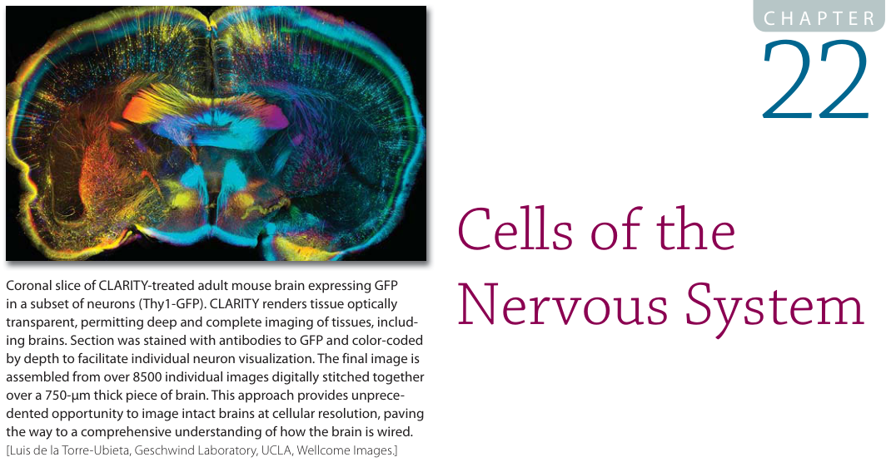
神经系统调节机体功能的方方面面，其复杂性令人惊叹。重1.3 kg的成人脑——这个储存、计算、整合并传递信息的控制中枢——含有近1000亿个神经细胞，称为神经元。这些神经元由约100万亿个突触相互连接，突触是两个或多个神经元进行通讯的连接点。单个神经元最多可与1万个其他神经元形成突触。
神经元组织成具有特定功能的互联单元或回路。有些回路感知生物体外环境和内环境的特征，并将这些信息传至脑进行处理和储存。另一些回路调节肌肉收缩和激素分泌。还有一些回路调节认知、情绪以及先天和习得的行为。除神经元外，神经系统还含有胶质细胞。历史上人们曾认为胶质细胞仅充当神经元的支持细胞，如今已认识到胶质细胞在脑功能中发挥主动作用。
神经系统细胞的生物学在两个方面非同寻常。首先，神经元是体内形态极性最强、分隔最彻底的细胞，因此对许多细胞生物学过程——从细胞骨架动态和膜运输到信号转导和基因调控——提出了巨大挑战。其次，单个神经元和胶质细胞组合形成极其复杂而精确的网络或回路。神经回路并非硬连接，相反，神经元的连接会随经验而改变，这一过程称为突触可塑性，即经验改变神经元之间突触连接的强度和数量。现代脑生物学的一个核心焦点是理解神经回路形成与可塑性背后的逻辑。尽管人们对神经细胞的结构和功能已有非常详细的了解——或许比任何其他细胞类型都更详细——但神经回路如何形成、如何随经验改变以及如何处理和计算信息，仍然是未解之谜。这些问题代表了二十一世纪生物学最激动人心的领域，并促使奥巴马总统于2013年启动"通过推动创新神经技术开展脑研究（BRAIN）计划"。BRAIN计划是一项大规模的国家行动，旨在开发新技术以研究单个细胞和复杂的神经回路，目标是动态地观察运作中的人脑。
脊椎动物的神经系统在解剖上分为中枢神经系统和外周神经系统：前者包含位于脑和脊髓内部的神经与胶质细胞，后者包含位于脑和脊髓外部的神经与胶质细胞。尽管在解剖上彼此分开，中枢神经系统和外周神经系统在功能上相互连接，外周神经充当脑与身体之间的通讯导管。中枢神经系统本身可分为四个主要部分：脊髓、脑干、小脑和大脑。每个区域都有特定的功能。例如，脊髓将感觉和运动信息从身体传导至脑，脑干调节呼吸和血压，小脑控制运动功能，而大脑处理运动和感觉信息、语言、学习与记忆以及其他高级功能。尽管人们发现这些不同区域各有其特有性质和特征的神经元与胶质细胞，但每个脑区域的功能特化主要源于回路连接的差异，而非组成细胞类型的差异。
事实上，尽管后生动物中神经元的类型和形态多种多样，所有神经细胞都具有共同特性，使它们专门利用电信号与化学信号的组合来通讯信息。电信号在神经元内处理和传导信息；神经元通常是高度极化的细胞，其突起长度比胞体大若干数量级（图22-1）。沿神经元传播的电脉冲称为动作电位，信息以动作电位的发放频率进行编码。由于电传递的速度，神经元是出色的信号转换器，比分泌激素的细胞快得多。与在神经元内传导信息的电信号相反，化学信号在细胞之间传递信息，其过程与其他类型信号细胞所用的过程相似（第15章和第16章）。
综合起来，神经系统的电信号和化学信号使其能够检测外界刺激，整合并处理接收到的信息，将其传递到更高级的脑中枢，并产生对刺激的适当反应。例如，感觉神经元具有特化的受体，可将环境中多种类型的刺激（如光、触觉、声音、气味分子）转化为电信号。这些电信号随后被转化为化学信号，传递给称为中间神经元的其他细胞，中间神经元再将信息转回电信号。最终，信息被传递到刺激肌肉的运动神经元，或传递到刺激腺体等其他类型细胞的其他神经元。
本章将聚焦于细胞和分子层面的神经生物学。我们首先考察神经元的总体结构、它们如何携带信号，以及神经元和胶质细胞如何由干细胞产生。接下来我们将聚焦于离子流、通道蛋白和膜特性：电脉冲如何沿神经元快速移动。第三，我们将考察神经元之间的通讯：沿细胞传播的电信号必须被转换为细胞间的化学脉冲，然后在接收细胞中再转回电信号。随后我们将考察几种感觉组织中的神经元，包括介导我们触觉、味觉和嗅觉的那些。神经信号的速度、精确性和整合能力使我们能够对快速变化的环境作出准确而及时的感觉知觉。在最后一节，我们将转向记忆储存背后的回路、神经元和细胞生物学机制。
关于神经细胞的大量信息来自对神经系统特定功能受影响的突变人类、小鼠、线虫和果蝇的分析。此外，对关键神经元蛋白（如电压门控离子通道和受体）的分子克隆和结构分析，有助于阐明本能、学习、记忆和情绪等复杂脑功能背后的细胞机制。
22.1 神经元与胶质细胞：神经系统的构建单元
本节我们考察神经元的结构以及它们如何传播电信号和化学信号。神经元的特征在于其细长而不对称的形态、高度局限化的蛋白质和细胞器，而最重要的是一组控制离子跨质膜流动的蛋白质。由于一个神经元可以应答来自多个神经元的输入、产生电信号并将信号传递给多个神经元，神经系统具有相当强的信号分析能力。例如，神经元可能只有在同时接收到来自输入神经元的五个激活信号时才传递信号。接收神经元既测量传入信号的总量，也判断这五个信号是否大致同步。从一个神经元到另一个神经元的快速突触输入可以是兴奋性的——与其他信号叠加，触发接收细胞中的电转导——也可以是抑制性的，阻碍这种传递。除兴奋性和抑制性突触外，神经元还接受较慢的神经调质输入，如去甲肾上腺素、多巴胺、血清素和乙酰胆碱，这些物质激活G蛋白偶联受体（见第15章），从而改变兴奋或抑制的阈值。因此，单个神经元的特性和连接为信息的整合与精炼奠定了基础。神经系统的输出是其回路特性的结果，即神经元之间的布线或互连，以及这些互连的强度。我们将首先考察信号如何被接收和发出，在本章后续部分再考察所涉及机器的分子细节。
信息从树突流向轴突
神经元由大致呈球形的神经母细胞前体产生。新生的神经元在长成极度细长的细胞之前可以迁移很长的距离。完全分化的神经元形态多样，但一般都具有某些关键特征（见图22-1）。细胞核位于细胞中圆钝的部分，称为胞体。细胞一端有称为树突（源自希腊语"树状"）的分支状细胞突起，它们是经由突触从其他神经元接收信号的主要结构。在神经元胞体上形成的突触也接收传入信号。神经元常具有极长且分支复杂的树突，在中枢神经系统（即脑和脊髓）中尤其如此。这使它们能与大量其他神经元（可达数万个）形成突触并接收信号。因此，汇聚的树突分支使单个神经元能够接收并整合来自许多细胞的信号。
当神经元开始分化时，细胞与树突相对的一端发生显著的外向生长，形成一条称为轴突的细长延伸臂，它实质上是一根传输导线。轴突的生长必须受到控制，才能形成正确的连接，这一过程称为轴突导向，涉及细胞骨架的动态变化，将在第18.8节讨论。轴突的直径从人脑某些神经元的仅1微米到乌贼巨轴突的1毫米不等。轴突长度可达数米（如长颈鹿颈部），并且常部分包裹着称为髓鞘的电绝缘层（见图22-1b），髓鞘由特定类别的胶质细胞——少突胶质细胞（在中枢神经系统中）和施万细胞（在外周神经系统中）——产生。绝缘层加快电传递并防止短路。轴突在神经元上与树突相对一端的短而分支的末端称为轴突末梢。信号正是在这里传递给下一个神经元，或传递给肌肉细胞、分泌激素的细胞等其他类型的细胞。神经元一端为树突、另一端为轴突末梢的这种不对称性，表明了信息从树突向轴突的单向流动。
信息以称为动作电位的离子流脉冲沿轴突传递
神经细胞属于可兴奋细胞这一类，该类还包括肌肉细胞、胰腺中的细胞等。与所有后生动物细胞一样，可兴奋细胞的质膜两侧存在内负性的电压或电位梯度，即膜电位（见第11章）。在可兴奋细胞中，这一电位可以突然变为零甚至反转，使细胞内部相对于质膜外侧为正。典型神经元的膜电压称为静息电位，因为它是没有信号传输时的状态，由质膜上的Na+/K+离子泵建立。这些离子泵与其他细胞用来产生静息电位的离子泵相同。Na+/K+离子泵利用ATP形式的能量，将带正电的Na+离子移出细胞、将K+离子移入细胞。随后K+通过静息K+通道流出细胞，导致细胞内部相对于外部带净负电荷。神经元的典型静息电位约为−70 mV。
神经元有自己独特的语言。它们利用独特的电学特性发送信号。这些信号表现为短暂的局部电压变化，从内负性到内正性，这一事件称为去极化。从神经元一端移动到另一端的强大去极化电压变化称为动作电位。"去极化"这一说法有些用词不当，因为神经元突然从内负性变为中性再变为内正性，更准确的说法是去极化之后继以相反方向的极化（图22-2）。在动作电位的峰值，膜电位可高达+50 mV（内正性），净变化约120 mV。正如我们将在第22.2节更详细地看到的，动作电位以高达100米/秒的速度沿轴突移动到轴突末梢。例如在人类，轴突可能长逾1米，但动作电位沿其全长移动只需几毫秒。神经元经过短暂的恢复期后可反复发放，例如每4毫秒（ms）一次，如图22-2所示。动作电位通过神经元的某一段后，通道蛋白和泵恢复内负性的静息电位（复极化）。这一恢复过程追随着动作电位沿轴突到达末梢，使神经元准备好再次发出信号。
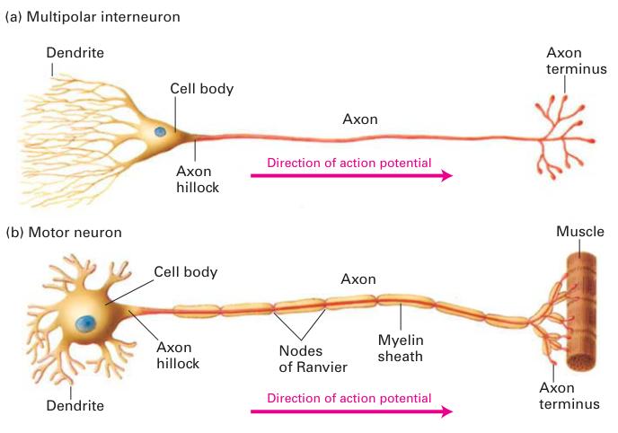
| Multipolar interneuron | 多极中间神经元 |
| Dendrite | 树突 |
| Cell body | 胞体 |
| Axon | 轴突 |
| Axon terminus | 轴突末梢 |
| Axon hillock | 轴丘 |
| Motor neuron | 运动神经元 |
| Node of Ranvier | 郎飞结 |
| Myelin sheath | 髓鞘 |
| Muscle | 肌肉 |
| Direction of action potential | 动作电位传导方向 |
重要的是，动作电位是"全或无"的。一旦达到启动它的阈值，就会发生完全发放。因此，信号信息主要不是由动作电位的强度携带，而是由它们的时间选择和频率携带。
有些可兴奋细胞不是神经元。肌肉收缩由直接与可兴奋肌肉细胞形成突触的运动神经元触发（见图22-1b）。胰腺β胰岛细胞的胰岛素分泌由神经元触发。在这两种情况下，激活事件都涉及质膜通道的开放，从而引起跨膜离子流以及受调控细胞电学特性的改变。
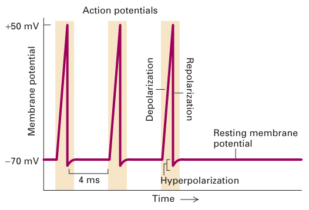
| Time | 时间 |
| Membrane potential | 膜电位 |
| Resting membrane potential | 静息膜电位 |
| Action potential | 动作电位 |
| Depolarization | 去极化 |
| Repolarization | 复极化 |
| Hyperpolarization | 超极化 |
信息通过突触在神经元之间流动
是什么启动动作电位？一个神经元的轴突末梢与另一个神经元的树突在称为化学突触（或简称突触）的连接处紧密相邻（图22-3）。突触前细胞的轴突末梢含有许多小囊泡，称为突触小泡，每个小泡都装满一种称为神经递质的小分子。动作电位到达突触前末梢会引起钙内流，触发少量突触小泡的胞吐，释放其中的神经递质分子。
神经递质在约0.5 ms内扩散穿过突触，与相邻神经元树突上的受体结合。神经递质的结合触发突触后细胞树突质膜上特定离子通道的开放或关闭，导致突触后细胞该局部区域膜电位的变化。这些变化通常使突触后膜去极化（使膜电位的内负性减小）。如果局部去极化足够大，就会在轴突中触发动作电位。传递是单向的，从突触前细胞的轴突末梢到突触后细胞的树突。
在某些突触中，神经递质的作用是使突触后细胞超极化，从而降低其产生动作电位的可能性。中枢神经系统中的单个轴突可与许多神经元形成突触，并同时诱导所有这些神经元产生反应。相反，有时多个神经元必须大致同步地作用于突触后细胞，才能产生足以触发动作电位的强影响。神经元对去极化和超极化信号的整合决定了动作电位发生的可能性。
因此，神经元既利用沿轴突极快的电传递，也利用细胞之间快速的化学通讯。这称为电化学信号传导。现在我们来看由神经元构成的网络——一个回路——如何实现有用的功能。
神经系统使用由多个神经元构成的信号回路
在复杂的多细胞动物中，神经元形成由三种基本类型神经细胞组成的信号回路：传入神经元、中间神经元和传出神经元。在周围神经系统与中枢神经系统之间传递信息的回路中，传入神经元（也称为感觉神经元或受体神经元）将神经冲动从受体或感觉器官传向中枢神经系统（即脑和脊髓）。这些神经元报告已经发生的事件，如一道闪光到达或肌肉的运动。触碰或疼痛刺激只有在关于刺激的信息经传入神经通路到达脑中之后，才会在大脑中产生感觉。传出神经元（也称为效应神经元）将神经冲动从中枢神经系统传出，以产生反应。例如，运动神经元将信号传至肌肉以刺激其收缩（见图22-1b）；其他效应神经元刺激内分泌细胞分泌激素。中间神经元数量最多，作为神经通路的一部分，将信号从传入神经元传递到传出神经元及其他中间神经元。一个中间神经元可跨接多个神经元，从而实现信号的整合或发散，有时还扩大信号的作用范围。在称为反射弧的简单回路类型中，中间神经元连接多个感觉神经元和运动神经元，使一个感觉神经元能影响多个运动神经元，一个运动神经元也能受多个感觉神经元影响；中间神经元以此整合并增强反射。例如，图22-4所示的人类膝跳反射涉及一个复杂的反射弧，其中一块肌肉被刺激收缩，而另一块肌肉被抑制收缩。该反射还向脑发送信息，报告发生了什么。这类回路使生物体能够通过对多组肌肉的协调作用来应答感觉输入，共同达成单一目的。
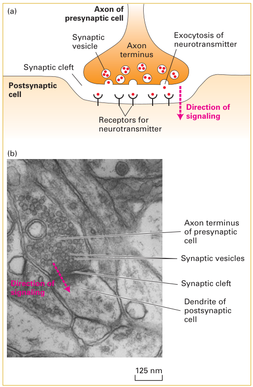
| Exocytosis of neurotransmitter | 神经递质的胞吐 |
| Axon of presynaptic cell | 突触前细胞的轴突 |
| Axon terminus | 轴突末梢 |
| Synaptic vesicle | 突触小泡 |
| Synaptic cleft | 突触间隙 |
| Postsynaptic cell | 突触后细胞 |
| Receptors for neurotransmitter | 神经递质受体 |
| Direction of signaling | 信号传导方向 |
| Axon terminus of presynaptic cell | 突触前细胞的轴突末梢 |
| Dendrite of postsynaptic cell | 突触后细胞的树突 |
然而，这些简单的信号回路并不能直接解释推理、计算和记忆形成等高级脑功能。脑中典型的神经元最多接收来自一千个其他神经元的信号，反过来又能将化学信号导向许多其他神经元。神经系统的输出取决于其回路特性——神经元之间布线的数量即互连的多少，以及这些互连的强度。尽管神经回路复杂多样，它们由少数几种基本模式组成。这些模式包括发散式，即一个突触前神经元与许多突触后神经元形成连接；汇聚式，即一个突触后神经元接收来自许多突触前神经元的输入；以及反馈式，即突触后神经元的输出反馈到突触前神经元甚至其自身（图22-5）。反馈回路形成所谓闭环，即系统的输出被用作输入。在正反馈回路中，输出维持或增强初始输入的活动。在负反馈回路中，输出抑制初始输入的活动。
胶质细胞形成髓鞘并支持神经元
尽管神经元令人惊叹，它们并不是人脑中唯一的细胞。胶质细胞（也称为神经胶质细胞或简称胶质）在脑中发挥许多作用，但本身不传导电冲动，它们大量存在于整个脑中。虽然许多教科书声称胶质细胞数量以10:1超过神经元，但最近的实验提示，人脑中胶质细胞与神经元的比例更接近1:1，不过在不同物种和脑区之间存在显著差异。例如，在人脑中，胶质细胞数量显著超过神经元，而在小脑中，神经元数量大大超过胶质细胞。在四种主要类型的胶质细胞中，有两种产生髓鞘——包裹神经元轴突的绝缘层（见图22-1b）：少突胶质细胞为中枢神经系统（CNS）产生髓鞘，施万细胞为外周神经系统（PNS）产生髓鞘。（这两类胶质细胞将在第22.2节更详细地讨论。）第三种胶质细胞——星形胶质细胞，向神经元提供生长因子和其他信号，也接收来自神经元的信号。第四种胶质细胞——小胶质细胞，构成中枢神经系统免疫系统的一部分。虽然小胶质细胞在谱系上与神经元或其他胶质细胞无关，但它们在大脑发育和健康中发挥重要作用。接下来两段我们描述星形胶质细胞的功能；少突胶质细胞和施万细胞将在第22.2节讨论，小胶质细胞将在第22.3节讨论。
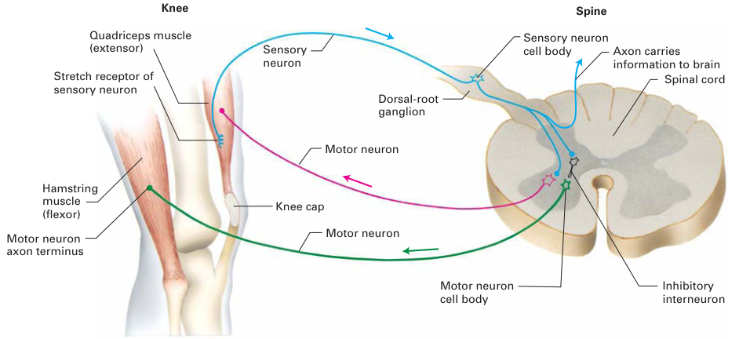
| Knee | 膝 |
| Spine | 脊柱 |
| Stretch receptor of sensory neuron | 感觉神经元的牵张感受器 |
| Hamstring muscle | 腘绳肌 |
| Motor neuron axon terminus | 运动神经元轴突末梢 |
| Motor neuron | 运动神经元 |
| Knee cap | 膝盖骨 |
| Motor neuron cell body | 运动神经元胞体 |
| Sensory neuron | 感觉神经元 |
| Sensory neuron cell body | 感觉神经元胞体 |
| Axon carries information to brain | 轴突将信息传至脑 |
| Dorsal-root ganglion | 背根神经节 |
| Spinal cord | 脊髓 |
| Inhibitory interneuron | 抑制性中间神经元 |
| Quadriceps muscle | 股四头肌 |
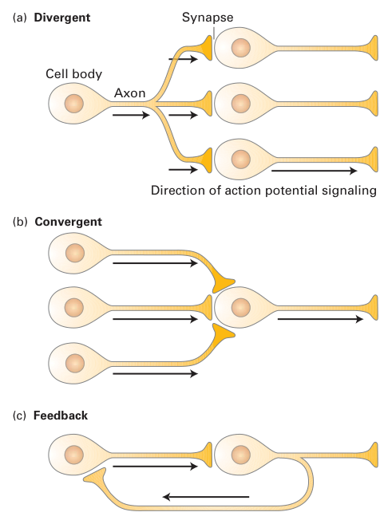
| Cell body | 胞体 |
| Synapse | 突触 |
| Axon | 轴突 |
| Direction of action potential signaling | 动作电位信号传导方向 |
| Divergent | 发散式 |
| Convergent | 汇聚式 |
| Feedback | 反馈式 |
星形胶质细胞因其星状外形而得名（图22-6），约占脑质量的1/3和脑细胞的40%。星形胶质细胞包围许多突触和树突；星形胶质细胞质膜上的Ca2+、K+、Na+和Cl−通道影响细胞外空间中自由离子的浓度，从而影响神经元和星形胶质细胞自身的膜电位。星形胶质细胞产生丰富的细胞外基质蛋白，其中一些被迁移中的神经元用作导向线索，还产生大量生长因子向神经元传递各种类型的信息。它们还释放若干因子，这些因子是神经元之间正常突触形成所必需的，如第22.3节所讨论。星形胶质细胞之间通过缝隙连接相连（缝隙连接的结构见图20-21），因此某个星形胶质细胞中离子组成的变化可传递给相邻的星形胶质细胞，距离可达数百微米。
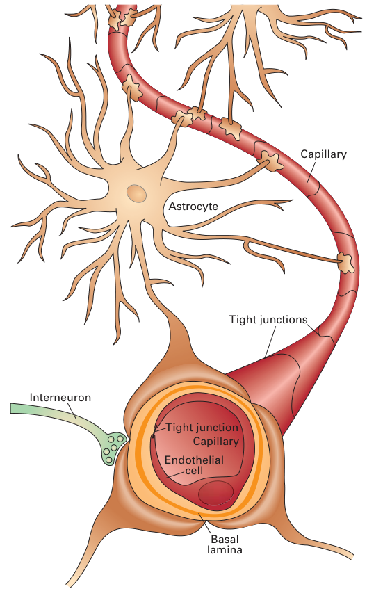
| Basal lamina | 基板 |
| Interneuron | 中间神经元 |
| Tight junction | 紧密连接 |
| Astrocyte | 星形胶质细胞 |
| Capillary | 毛细血管 |
| Endothelial cell | 内皮细胞 |
有些星形胶质细胞还是血脑屏障形成的关键调控者，血脑屏障的作用是控制哪些类型的分子可以从血流进入脑，以及相反方向的通行（见图22-6）。脑中的血管供应氧并清除CO2，还输送葡萄糖和氨基酸，毛细血管距每个细胞只有几微米。这些毛细血管形成血脑屏障，允许氧和CO2穿过内皮细胞壁，但阻止例如血液中循环的神经递质和某些药物进入脑。该屏障由一组紧密连接（第20章）组成，这些紧密连接把构成毛细血管壁的内皮细胞互连起来。周围的星形胶质细胞促进这些内皮细胞的特化，使其通透性低于身体其他部位毛细血管中的内皮细胞。
神经干细胞在中枢神经系统中生成神经细胞与胶质细胞
人们对神经系统的形成以及通过细胞替代疗法寻找更好方法来预防或治疗神经退行性疾病的巨大兴趣，使神经干细胞的表征及其向成熟神经元和胶质细胞的分化成为一个重要目标。我们对神经和胶质干细胞的了解大多来自对胚胎脑发育的研究。脊椎动物神经发育的最早阶段涉及一层外胚层（衬在胚胎外表面的细胞层）卷成一条从头到尾延伸于胚胎全长的管（图22-7a）。这条神经管将形成脑和脊髓。起初管的厚度只有一个细胞层，这些称为神经上皮细胞的细胞充当胚胎神经干细胞（NSC），将产生整个中枢神经系统。神经管的内部将在前脑中扩张，形成充满液体的腔室，称为脑室；衬在神经管内表面、大多数细胞分裂发生的细胞层称为脑室区（VZ）。
人们在小鼠中进行了标记和追踪实验，以确定细胞如何产生以及产生后去往何处。胚胎神经上皮细胞（NEC），即衬在脑室的神经干/祖细胞，可以进行对称分裂，产生两个并排的子代干细胞或祖细胞（图22-7b），从而扩增祖细胞群体。在神经元产生开始前后，NEC转变为放射状胶质细胞，后者是胚胎神经发生过程中的主要前体细胞。放射状胶质细胞也可以对称分裂成两个子代放射状胶质细胞，或不对称分裂，产生另一个放射状胶质细胞和一个分化的神经元，或产生一个放射状胶质细胞和一个中间祖细胞。中间前体细胞迁移到紧邻VZ的区域，称为脑室下区（SVZ），它们继而产生分化的神经元。新生神经元以放射状胶质细胞为支架，从VZ向外朝脑表面迁移，呈放射状向外迁移。在大脑皮层中，迁移的神经元由内向外依次形成层次。在发育后期，RGC也产生胶质细胞，包括星形胶质细胞和少突胶质细胞（图22-7b）。
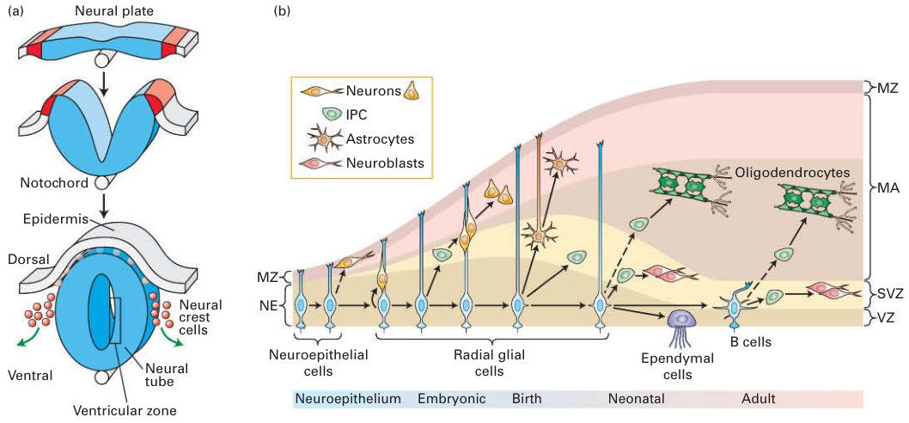
| Neural tube | 神经管 |
| Neural plate | 神经板 |
| Neural crest cells | 神经嵴细胞 |
| Notochord | 脊索 |
| Epidermis | 表皮 |
| Neuroepithelial cells | 神经上皮细胞 |
| Radial glial cells | 放射状胶质细胞 |
| Neuroblasts | 神经母细胞 |
| Ependymal cells | 室管膜细胞 |
| B cells | B型细胞 |
| IPC | 中间祖细胞 |
| VZ | 脑室区 |
| SVZ | 脑室下区 |
| Astrocytes | 星形胶质细胞 |
| Oligodendrocytes | 少突胶质细胞 |
多年来人们认为成体中不形成新的神经细胞。大多数哺乳动物脑细胞确实在成年时停止分裂，但侧脑室中的一些细胞、称为成体SVZ的区域以及海马的一个区域中的一些细胞继续充当干细胞，产生新的神经元（图22-8a）。与其他类型的干细胞一样，这些神经干细胞在功能上以自我更新和分化为神经谱系（包括神经元、星形胶质细胞和少突胶质细胞）的能力来定义（图22-8b）。为鉴定和表征神经干细胞，人们将从SVZ分离的细胞与FGF2或EGF等生长因子一起培养。其中一些细胞存活下来并以未分化状态增殖；也就是说，它们能够自我更新。在存在其他生长因子时，这些未分化细胞产生神经元、星形胶质细胞或少突胶质细胞。从成体脑中成功建立自我更新且多潜能的细胞，为神经干细胞群体的存在提供了有力证据。虽然这些新神经元在成体脑中的功能尚不清楚，但啮齿动物的研究表明，丰富环境和运动可提高它们的存活率（图22-8c）。
SVZ中的一些NSC具有星形胶质细胞的性质，例如产生胶质纤维酸性蛋白（GFAP）。但这些NSC可以不对称分裂，既复制自身，又产生称为短暂扩增细胞的中间前体细胞，后者继而分裂形成神经前体细胞（神经母细胞）。SVZ微环境由衬在脑室的室管膜细胞发出的大部分未知信号，以及附近形成血管的内皮细胞共同创建（见图22-8c）。内皮细胞及其形成的基板与前体细胞和干细胞直接接触，被认为对形成神经干细胞微环境至关重要。每个神经干细胞伸出一条纤毛穿过室管膜细胞层，直接接触脑室。创建该微环境的信号尚未完全阐明，但有证据表明存在多种因子的混合，包括FGF、BMP、IGF、VEGF、TGFα和BDNF（这些信号通路的描述见第16章）。BMP似乎促进星形胶质细胞分化而非神经分化，这是细胞命运决定调控必须保持适当平衡的一个例子。
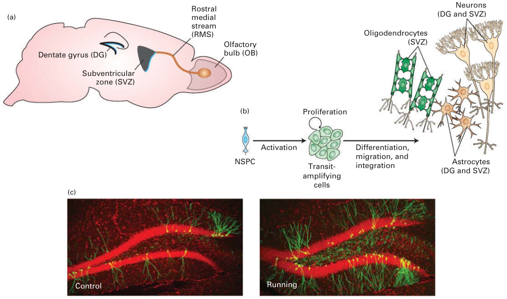
| Control | 对照组 |
| Running | 跑动 |
| NSPC | 神经干细胞与前体细胞 |
| Transit-amplifying cells | 短暂扩增细胞 |
| Astrocytes (DG and SVZ) | 星形胶质细胞（DG与SVZ） |
| Oligodendrocytes (SVZ) | 少突胶质细胞（SVZ） |
| Neurons (DG and SVZ) | 神经元（DG与SVZ） |
| Dentate gyrus (DG) | 齿状回 |
| Subventricular zone (SVZ) | 脑室下区 |
| Rostral medial stream (RMS) | 吻侧中间流 |
| Olfactory bulb (OB) | 嗅球 |
| Proliferation | 增殖 |
| Activation | 激活 |
| Differentiation, migration, and integration | 分化、迁移与整合 |
- 神经元是高度不对称的细胞，由一端的多个树突、含细胞核的胞体、一条长轴突和轴突末梢组成。
- 神经元利用跨质膜的离子流脉冲将信息从一端传至另一端。细胞一端的树枝状细胞突起——树突——接收来自其他神经元的化学信号，触发离子流动。电信号迅速移动到细胞另一端的轴突末梢（见图22-1）。
- 不携带信号的静息神经元具有ATP驱动的泵，可将离子跨质膜转运。K+离子向外的移动在细胞内产生净负电荷。这一电压称为静息电位，通常约为−70 mV（见图22-2）。
- 如果刺激使某些离子通道开放，从而让某些离子更自由地流动，一个强烈的电压变化脉冲就可能沿神经元从树突传至轴突末梢。相对于细胞外液，细胞内部从约−70 mV变为约+50 mV。这一脉冲称为动作电位（见图22-2）。
- 动作电位以高达100米/秒的速度沿轴突全长从胞体传至轴突末梢。
- 神经元通过称为突触的小间隙相连。由于动作电位不能跳过该间隙，在突触前细胞的轴突末梢，信号由电信号转换为化学信号，以刺激突触后细胞。
- 受到动作电位刺激时，轴突末梢通过胞吐释放称为神经递质的小包化学物质。神经递质扩散穿过突触，与突触另一侧树突上的受体结合。这些受体可以诱导或抑制突触后细胞中新的动作电位（见图22-3）。
- 神经元形成回路，通常由感觉神经元、中间神经元和运动神经元组成，如膝跳反射中那样（见图22-4）。
- 胶质细胞在神经系统中含量丰富，具有许多用途。少突胶质细胞和施万细胞构建包裹许多神经元的髓鞘绝缘层。
- 神经元彼此连接形成回路。神经元连接的三种基本模式包括发散式、汇聚式和反馈式回路。
- 星形胶质细胞是另一类胶质细胞，它们将突起缠绕在突触和血管周围，并促进血脑屏障的形成（见图22-6）。星形胶质细胞还分泌刺激突触形成的蛋白质，并参与神经回路的形成和功能。
- 脑室区中的胚胎神经干细胞产生中枢神经系统中的所有细胞。这些干细胞和祖细胞经历一系列对称和不对称分裂，产生更多的祖细胞、胶质细胞和神经元（图22-7）。
- 在成体脑中，新的神经元在脑室下区和海马的齿状回区域产生（图22-8）。干细胞和祖细胞的分化受多种信号因子调控。
22.2 电压门控离子通道与动作电位的传播
在第11章中我们已经知道，所有细胞的质膜两侧都存在约70 mV的电势（胞质面为负），包括静息的神经细胞。这种静息膜电位是由K+离子通过质膜上开放的非门控K+通道向外移动产生的，并由K+浓度梯度（胞质 > 细胞外液）驱动。胞质中K+浓度高而Na+浓度低（相对于细胞外液中的浓度），这是由质膜上的Na+/K+泵产生的，该泵利用ATP中磷酸酐键水解释放的能量将Na+泵出、K+泵入。Na+离子从细胞外液进入胞质在热力学上是有利的，既由Na+浓度梯度（细胞外液 > 胞质）驱动，也由内侧为负的膜电位驱动（见图11-25）。然而，静息细胞的质膜上大多数Na+通道是关闭的，因此Na+离子几乎不能向内移动（图22-9a）。
在动作电位期间，其中一些Na+通道开放，允许Na+离子向内移动，使膜去极化。动作电位之所以能沿轴突传播，是因为轴突某一部位的电压变化会触发轴突下一段的通道开放。因此，这类电压门控通道是神经传递的核心。本节我们先介绍动作电位的一些关键特性——动作电位沿轴突从胞体快速移向末梢；然后描述负责在神经元中传播动作电位的电压门控通道如何工作；在本节的最后一部分，我们将看到胶质细胞产生的髓鞘如何提高神经细胞电信号传递的速度和效率。
动作电位的幅度接近ENa，由Na+经开放Na+通道内流引起
图22-9b展示了如果质膜上有足够多的Na+通道开放，膜电位将如何变化。由此产生的带正电Na+离子内流入胞质将超过K+离子经开放静息K+通道的外流。结果是阳离子的净向内移动，在质膜的胞质面产生过量正电荷，并在细胞外面产生相应的过量负电荷（因为Na+离子内流后留在细胞外液中的Cl−离子）。换言之，质膜去极化的程度使内侧面对外侧而言变为正电。
回想第11章：离子的平衡电位是指这样一种膜电位，此时由于两种相反的力——离子浓度梯度与膜电位——相互平衡，该离子在膜两侧之间没有净流动。在动作电位去极化的峰值处，膜电位的幅度非常接近由能斯特方程给出的Na+平衡电位ENa（方程11-2），如果电压门控Na+通道的开放是产生动作电位的原因，那么这正是预期结果。例如，鱿鱼巨轴突动作电位的实测峰值为+35 mV，与根据外侧440 mM、内侧50 mM的Na+浓度计算出的ENa值（+55 mV）接近。动作电位的幅度与细胞内外Na+浓度之间的关系已通过实验证实。例如，如果将沐浴鱿鱼轴突的溶液中Na+浓度降低到正常的三分之一，去极化的幅度就减小40 mV，与预测值几乎一致。
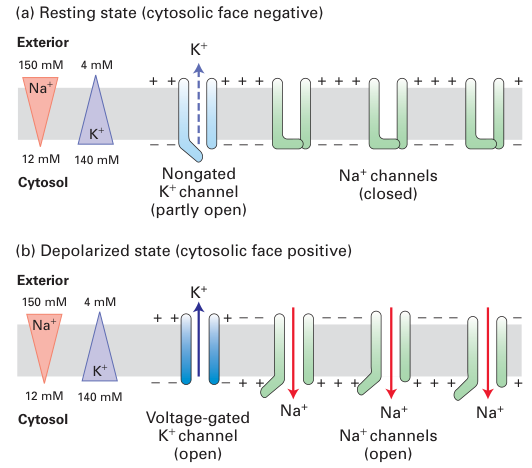
| Nongated K+ channel | 非门控K+通道 |
| Voltage-gated K+ channel | 电压门控K+通道 |
| Voltage-gated Na+ channel | 电压门控Na+通道 |
| Exterior | 细胞外 |
| Cytosol | 胞质 |
| Resting state | 静息状态 |
| Depolarized state | 去极化状态 |
电压门控Na+通道与K+通道的依次开放和关闭产生动作电位
构成动作电位的膜电位变化并回到静息值的循环持续1–2毫秒，在典型神经元中每秒可发生数百次（见图22-2）。这些膜电位的周期性变化首先来自轴突质膜某一段上若干电压门控Na+通道（即由膜电位变化而开放的通道）的开放与关闭，然后来自电压门控K+通道的开放与关闭。这些通道在动作电位产生中的作用是在鱿鱼巨轴突的经典研究中阐明的——在鱿鱼巨轴突中可以插入多根微电极而不破坏质膜的完整性。然而，所有神经元都使用相同的基本机制。
电压门控Na+通道 如前所述，在静息神经元中电压门控Na+通道是关闭的。膜的轻度去极化（如神经递质刺激突触后细胞时发生的那样）会增加任一通道开放的可能性；去极化程度越大，通道开放的概率就越高。去极化引起这些通道蛋白的构象变化，打开孔道胞质面上的一个闸门，使Na+离子得以通过孔道进入细胞。因此，初始膜去极化越大，开放的电压门控Na+通道就越多，进入的Na+离子也越多。
当Na+离子通过开放的通道内流时，胞质面上的过量正电荷和外质面上的负电荷会从最初去极化的位点向外扩散一小段距离。这种胞质面上正电荷与外侧面上负电荷的被动扩散使邻近的质膜片段去极化（使内侧负电性减小），导致这些片段中更多电压门控Na+通道开放、Na+内流增加。随着更多Na+离子进入细胞，细胞膜内侧去极化程度更高，导致更多电压门控Na+通道开放、膜去极化更强，从而启动Na+离子的爆发式进入。在不到一毫秒的时间里，这一小段膜对Na+的通透性远远超过对K+的通透性，膜电位趋近于ENa——即膜只对Na+离子通透时的平衡电位。然而当膜电位趋近ENa时，Na+离子的进一步净向内移动就停止了，因为Na+离子的浓度梯度（外 > 内）此时被内侧为正的膜电位所抵消。动作电位在峰值处接近ENa的值。
图22-10示意性地描绘了电压门控Na+通道的关键结构特征以及引起其开放和关闭的构象变化。在静息状态下，蛋白位于胞质面的一个片段——闸门——阻挡着中央孔道，阻止离子通过。该通道含有四个带正电的电压感受α螺旋；在静息状态下，这些螺旋被质膜内侧为负的表面所吸引。膜的轻度去极化触发这些电压感受螺旋朝向外质面上积累的负电荷移动，引起闸门的构象变化，从而打开通道并允许Na+离子流动。约1毫秒后，胞质面的通道失活片段移动进入开放的通道，阻断Na+离子的任何进一步移动。只要膜保持去极化，通道失活片段就一直留在通道开口中；在这段不应期内，通道处于失活状态，无法再次开放。内侧为负的静息电位重新建立几毫秒后，通道失活片段摆离孔道，电压感受α螺旋回到膜胞质面附近的静息位置。于是通道回到关闭的静息状态，再次能够被去极化打开。请注意图22-10中所示"关闭"通道与"失活"通道之间的重要区别。
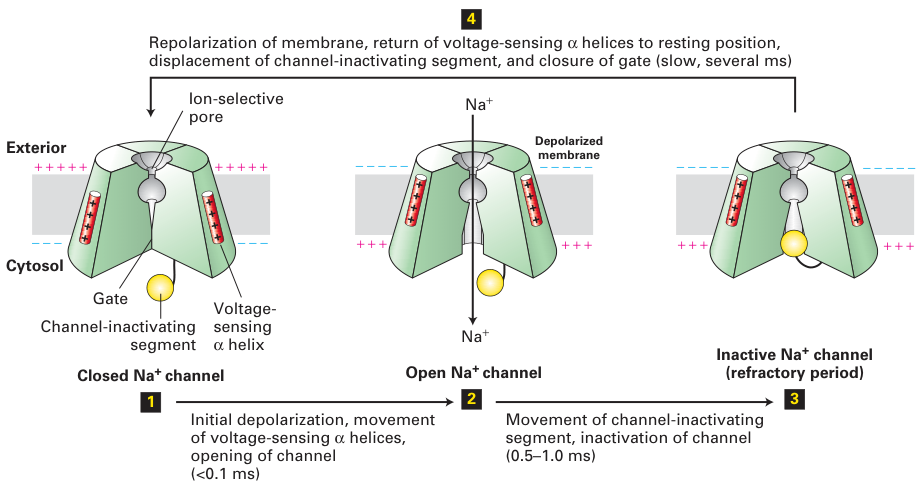
| Ion-selective pore | 离子选择性孔道 |
| Voltage-sensing α helix | 电压感受α螺旋 |
| Gate | 闸门 |
| Channel-inactivating segment | 通道失活片段 |
| Closed Na+ channel | 关闭的Na+通道 |
| Open Na+ channel | 开放的Na+通道 |
| Inactive Na+ channel | 失活的Na+通道 |
| Depolarized membrane | 去极化的膜 |
| Exterior | 细胞外 |
| Cytosol | 胞质 |
电压门控K+通道 不应期发生的膜复极化在很大程度上是由于电压门控K+通道的开放。随后K+从胞质外流增加，清除了质膜胞质面上的过量正电荷（即使其更负），从而恢复内侧为负的静息电位。有短暂的一瞬间，膜实际上发生超极化；在这种超极化的峰值处，电位趋近EK，它比静息电位更负（见图22-2）。
电压门控K+通道的开放由动作电位的大幅去极化引起。与电压门控Na+通道不同，大多数类型的电压门控K+通道只要膜处于去极化状态就一直保持开放，只有当膜电位回到内侧为负的值时才关闭。由于电压门控K+通道在初始去极化之后稍晚才开放，在动作电位的顶点，它们有时被称为延迟K+通道。最终所有电压门控K+和Na+通道都回到关闭的静息状态。在这种基线条件下唯一开放的通道是产生静息膜电位的非门控K+通道，膜电位很快回到其通常值−60至−70 mV（见图22-9a）。
尽管在动作电位周期中膜去极化、超极化和复极化时，Na+和K+离子的流动会显著改变膜电位，但必须注意，这些离子跨膜交换的量与胞质和细胞外空间中Na+和K+离子的总量相比很小。因此，正如我们稍后将看到的，神经元中动作电位的传导并不直接需要维持其离子浓度梯度的Na+/K+泵。
电压门控Na+通道难以用膜片钳技术研究，但图22-11中的膜片钳记录揭示了电压门控K+通道的基本特性（膜片钳操作的描述见图11-22）。在该实验中，将神经元质膜的小片段钳制在不同电压下，测量因K+离子通过开放K+通道流动而穿过该膜片的电荷通量。在−10 mV这一中等去极化电压下，膜片中的通道不常开放，且仅开放几毫秒——这分别由记录上向上小峰的数量和宽度判断。此外，通过它们的离子通量相当小，这由通过每个开放通道的电流（小峰的高度）衡量。将膜进一步去极化至+20 mV会使这些通道开放的频率大约加倍；同时，通过每个开放通道的K+离子也更多（小峰高度更大），因为在+20 mV的膜电位下驱动胞质K+离子外流的力比−10 mV时大。将膜进一步去极化至+50 mV（动作电位峰值处的值）会使更多K+通道开放，并增加K+通过它们的通量。因此，通过在动作电位峰值期间开放，这些K+通道允许K+离子向外移动、膜电位复极化，同时电压门控Na+通道被关闭和失活。
在人类和其他脊椎动物中已鉴定出100多种电压门控K+通道蛋白。正如我们稍后将要讨论的，所有这些通道蛋白具有相似的整体结构，但表现出不同的电压依赖性、电导、通道动力学和其他功能特性。许多通道只在强烈去极化的电压下开放，这一特性是产生动作电位特征性的最大去极化（在膜开始复极化之前）所必需的。
鉴于电压门控Na+和K+通道在决定动作电位发放中的根本作用，这些通道的突变会引起遗传性单基因人类癫痫，也就不足为奇了。癫痫是影响约1%人口的惊厥性疾病，由脑内神经元活动过度同步化引起。癫痫可由多种原因引起，包括脑发育异常、脑损伤以及药物和酒精滥用，但有些类型的癫痫是由编码离子通道的基因突变引起的。这类疾病称为通道病。人类遗传学研究已鉴定出Nav1.1电压门控Na+通道中的特定突变可引起伴热性惊厥的全身性癫痫，而Kv7.2和Kv7.3电压门控K+通道的突变则引起另一种称为良性家族性新生儿惊厥的癫痫。电压门控Na+和K+通道的突变通过多种方式引起神经元高兴奋性，包括改变Na+通道失活或阻断K+通道依赖的神经元复极化（两者都会延长动作电位的时程），以及降低触发动作电位的阈值，例如通过降低神经元上抑制性输入与兴奋性输入的比值。 ■
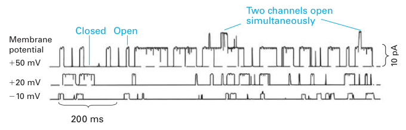
| Open | 开放 |
| Closed | 关闭 |
| Membrane potential | 膜电位 |
| Two channels open simultaneously | 两个通道同时开放 |
动作电位单向传播且不衰减
动作电位始于胞体附近一小片轴突质膜上发生的变化。在动作电位的峰值处，膜去极化的被动扩散足以使相邻的一段膜去极化。这使该区域中少数电压门控Na+通道开放，从而增大该区域的去极化程度，并引起更多Na+通道的爆发式开放和动作电位的产生。这种去极化很快触发电压门控K+通道开放和静息电位的恢复。因此，动作电位以行波的形式从其起始位点向外扩散而不衰减。
如前所述，在不应期，电压门控Na+通道会失活数毫秒。这种处于不应期的通道不能传导离子移动且在此期间即使膜因被动扩散而去极化也不能开放。如图22-12所示，Na+通道在不应期无法重新开放这一点，确保了动作电位只朝一个方向传播——从它们起源的轴突起始段到轴突末梢。由于动作电位所在位置上游的Na+通道仍处于失活状态，它们无法被被动扩散引起的轻度去极化重新开放。相反，动作电位"下游"的Na+通道则开始开放。
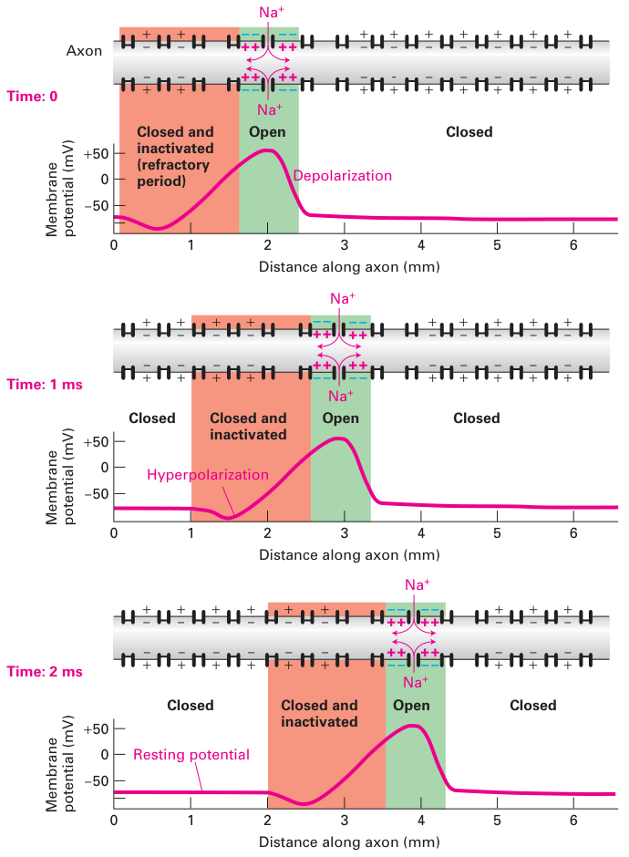
| Distance along axon | 沿轴突的距离 |
| Membrane potential | 膜电位 |
| Axon | 轴突 |
| Depolarization | 去极化 |
| Closed and inactivated | 关闭且失活 |
| Open | 开放 |
| Closed | 关闭 |
| Resting potential | 静息电位 |
| Hyperpolarization | 超极化 |
Na+通道的不应期还限制了神经元每秒能传导的动作电位数目。这一点很重要，因为携带信息的是动作电位的频率。动作电位上游（即更靠近胞体）的Na+通道重新开放也被电压门控K+通道开放导致的膜超极化所延迟。
神经细胞在没有ATP的情况下也能传导许多动作电位
动作电位期间膜的去极化仅由少量Na+离子进入神经元引起，并不显著影响胞内Na+浓度。典型神经细胞每平方微米（μm2）质膜上约有10个电压门控Na+通道。由于每个通道在其开放的1毫秒内通过约5000–10,000个离子（见图11-23），每次动作电位期间每个μm2质膜最多有10^5个离子向内移动。
为评估这种离子通量对静息轴突典型的10 mM（0.01 mol/L）胞质Na+浓度的影响，我们考察一段长10微米（μm）、直径1 μm的轴突。该段的体积为78 μm3，即7.8 × 10^−13升，含有4.7 × 10^9个Na+离子：(10^−2 mol/L) (7.8 × 10^−13 L) (6 × 10^23 Na+/mol)。这段轴突的表面积为31 μm2，在一次动作电位通过期间，每μm2膜将有10^5个Na+离子进入。因此这种Na+内流仅使该段中Na+离子的数目增加约1500分之一：(4.7 × 10^9) / (3.1 × 10^6)。同样，因K+离子经电压门控K+通道外流引起的膜复极化也不会显著改变胞内K+浓度。
所有电压门控离子通道都有相似的结构
在解释了动作电位如何依赖于电压门控通道受调控的开放与关闭之后，我们转向对这些非凡蛋白的分子解析。在描述这些通道的基本结构之后，我们将聚焦于三个问题：
● 这些蛋白如何感知膜电位的变化？
● 这种变化如何被转导为通道的开放？
● 是什么使这些通道在开放后不久便失活？
理解电压门控离子通道的最初突破来自对携带shaker突变的果蝇（Drosophila melanogaster）的分析。这些果蝇在乙醚麻醉下剧烈抖动，反映出运动控制的丧失以及某些运动神经元的缺陷——它们的动作电位异常延长。研究人员推测shaker突变导致了通道功能缺陷。对相关基因的克隆证实，有缺陷的蛋白是一种电压门控K+通道。shaker突变使突变通道无法在去极化时立即正常开放。为证实野生型shaker基因编码一种K+通道，研究者以克隆的野生型shaker cDNA为模板，在无细胞体系中产生shaker mRNA。将该mRNA在蛙卵母细胞中表达，并对新合成的通道蛋白进行膜片钳测量，结果显示其功能特性与神经元膜中的电压门控K+通道完全相同，从而确凿地证明shaker基因编码这种K+通道蛋白。
Shaker K+通道以及已鉴定出的大多数其他电压门控K+通道都是四聚体蛋白，由四个相同的亚基围绕中央孔道排列在膜中构成。每个亚基由六个跨膜α螺旋（命名为S1–S6）和一个P片段构成（图22-13a）。S5和S6螺旋及P片段在结构和功能上与前面讨论的非门控静息K+通道中的相应部分同源（见图11-20）；S5和S6螺旋构成K+选择性过滤器的内衬，离子即由此通过。S1–S4螺旋形成一个刚性复合体，起电压感受器的作用（其中S4中带正电的侧链担任主要感受器）。从S1伸入胞质的N端"球"即为通道失活片段。
电压门控Na+通道是单体蛋白，组织为四个同源结构域I–IV（图22-13b）。这些结构域中的每一个都类似于电压门控K+通道的一个亚基。然而，与具有四个通道失活片段的电压门控K+通道不同，单体电压门控通道只有一个通道失活片段。除了这一微小的结构差异及其离子通透性的不同之外，所有电压门控离子通道被认为以相似的方式发挥功能，并且都是从一个含有六个跨膜α螺旋的单体祖先通道蛋白演化而来。下一节将聚焦于电压门控K+通道，因为原核和真核K+通道的晶体结构在十多年前就已解出，随后的研究不断完善了我们对它们功能结构基础的理解。不过，我们也会将这一结构与原核电压门控Na+通道的结构进行比较和对照——后者的分子结构于2011年解出。
电压感受S4 α螺旋响应膜去极化而移动
由于新获得的细菌和Shaker钾通道及其他通道的晶体结构，我们对通道蛋白生物化学的理解正在迅速推进。跨膜蛋白的制备和结晶是出了名的困难，对科学家提出了独特的挑战。获得这些难对付的膜蛋白晶体的一种方法，是用单克隆抗体片段[F(ab)'s；第23章]的结合物将它们包围起来；在其他情况下，则使它们与正常的蛋白结合伴侣形成复合物进行结晶。在两种情况下，复合物中这些水溶性蛋白的存在都以某种方式促进了晶体的形成。
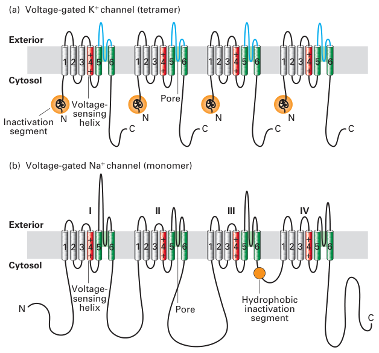
| Voltage-gated K+ channel | 电压门控K+通道 |
| Voltage-gated Na+ channel | 电压门控Na+通道 |
| Tetramer | 四聚体 |
| Monomer | 单体 |
| Pore | 孔道 |
| Voltage-sensing helix | 电压感受螺旋 |
| Hydrophobic inactivation segment | 疏水性失活片段 |
| Inactivation segment | 失活片段 |
| Exterior | 细胞外 |
| Cytosol | 胞质 |
这些通道的结构揭示了电压感受结构域非同寻常的排布方式，并提示了蛋白的哪些部分为打开通道而移动。如前所述，K+通道四聚体与Na+通道单体一样，其孔道的壁由S5和S6螺旋构成（图22-13a和图22-14）。在该核心结构之外，四条臂或称"桨"，各含S1–S4螺旋，伸入周围的膜中，并与S5和S6螺旋的外侧相互作用；这些就是电压感受器，它们与孔道的接触极少。灵敏的电学测量表明，电压门控Na+或K+通道的开放伴随着12至14个与蛋白结合的正电荷从膜的胞质面移动到外质面。蛋白中移动的部分是由S1–S4螺旋构成的刚性复合体；S4贡献了大部分正电荷，是主要的电压感受器，每第三或第四个残基就有一个带正电的赖氨酸或精氨酸（图22-14d）。S4中的精氨酸已被测得在通道开放时移动多达1.5 nm，这可以与约5 nm的膜厚度或α螺旋本身1.2 nm的直径相比较。
在静息状态下，S1–S4复合体（"桨"）上的正电荷被膜胞质面上的负电荷吸引。在去极化的膜中，这些同样的正电荷转而受到膜外质（外）表面负电荷的吸引，使S1–S4桨部分地跨过膜移动——从胞质面移向外质面。图22-10以示意图描绘了电压门控Na+通道的这一移动，它触发蛋白的构象变化，从而打开通道。
电压敏感通道结构最不寻常之处，是存在与脂质接触的带电基团，例如精氨酸。电压感受器的位置有助于解释早期的实验——在那些实验中，通过添加电压感受结构域，一个非电压敏感的通道被转变为电压感受通道。这样的结果在电压感受器必须深埋于核心结构中的情况下似乎不太可能出现。
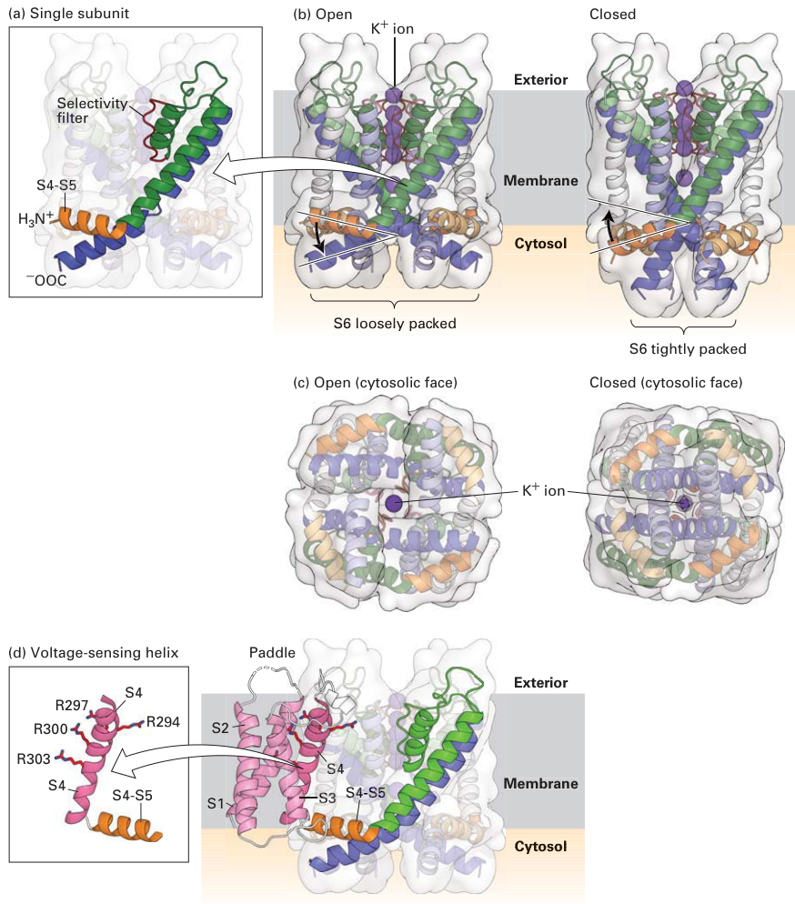
| Single subunit | 单个亚基 |
| Paddle | 桨 |
| Voltage-sensing helix | 电压感受螺旋 |
| S4–S5 linker | S4–S5连接段 |
| Selectivity filter | 选择性过滤器 |
| K+ ion | K+离子 |
| Open | 开放 |
| Closed | 关闭 |
| Membrane | 膜 |
| Exterior | 细胞外 |
| Cytosol | 胞质 |
对突变Shaker K+通道的研究支持S4螺旋在电压感受中的重要性。当Shaker K+通道S4螺旋中的一个或多个精氨酸或赖氨酸残基被替换为中性或酸性残基时，响应膜去极化而跨膜移动的正电荷比正常情况少，这表明S4螺旋中的精氨酸和赖氨酸残基确实跨膜移动。研究者将哺乳动物电压门控K+通道开放形式的结构与另一种K+通道的关闭结构进行了对比。结果提出了一个通道响应电压感受器跨膜移动而开放和关闭的模型（见图22-14a、b）。在该模型中，由S1–S4螺旋构成的电压感受器响应电压而移动，并对连接S4与S5的连接螺旋施加扭矩：
● 在通道开放的构象中，S4–S5连接段的位置迫使S6螺旋在胞质面附近形成扭结（图22-14a中蓝色），孔道内部靠近胞质面处是开放的。孔道1.2 nm的直径足以容纳水合的K+离子（见图22-14c）。
● 当细胞膜复极化、电压感受器朝胞质膜表面移动时，S4–S5连接段（图22-14b中橙色）向下扭转，朝向细胞内部。S6螺旋随之伸直，将通道底部挤压关闭。因此，闸门由S5和S6螺旋朝向胞质的末端构成，那里是孔道最窄处。
尽管电压门控K+通道和电压门控Na+通道具有相似的电压感受器和孔道结构，但它们离子选择性过滤器的结构以及传导离子的方式却有显著差异（第11章也已讨论）。Na+通道的选择性过滤器比K+通道的大得多，尽管Na+离子的直径（0.102 nm）小于K+离子（0.138 nm）。K+通道的孔道含有保守的氨基酸，形成由羰基氧原子构成的内衬（见图11-21）。当K+离子进入孔道时，这些氧原子取代其水合水；较小的Na+离子则太小，无法与K+通道孔道的主链羰基相互作用。相反，Na+离子以水合离子的形式通过Na+通道孔道。Na+通道的孔道由保守的带负电氨基酸作内衬，其大小刚好能容纳一个水合的Na+离子，带正电的Na+离子通过其内层结合水分子与带负电的孔道残基相互作用。水合的K+离子太大，无法通过这个孔道。
局部麻醉药利多卡因常用于牙科操作或小手术（例如缝合伤口）中减轻疼痛，其作用机制是阻断Na+离子流经电压门控Na+通道。利多卡因结合于构成通道孔道内衬的氨基酸残基，阻止Na+内流，从而阻止动作电位的产生。利多卡因的结合位点仅在通道的开放状态下才可用，利多卡因的结合似乎将通道锁定在开放但被堵塞的状态。 ■
通道失活片段移入开放孔道阻断离子流
大多数电压门控通道的一个重要特性是失活；也就是说，它们在开放后不久便自发关闭，形成失活通道，直到膜复极化才会重新开放。在静息状态下，电压门控K+通道四个亚基N端的球状结构域游离于胞质中（见图22-13）。在通道被去极化打开数毫秒后，一个球穿过两个亚基之间的开口，结合到孔道中央腔的一个疏水口袋中，阻断K+离子的流动（见图22-10）。几毫秒后，球从孔道中移出，蛋白恢复到关闭的静息状态。K+通道中的球链结构域在功能上等同于Na+通道中的通道失活片段。
图22-15所示的实验结果表明，K+通道的失活依赖于球结构域，发生在通道开放之后，且不要求球结构域与通道蛋白共价连接。在另一些实验中，将缺少连接球与S1螺旋的约40个残基链部分片段的突变K+通道在蛙卵母细胞中表达。对通道活性的膜片钳测量显示，链越短，失活越快，就好像连接在较短链上的球更容易移入开放的通道。
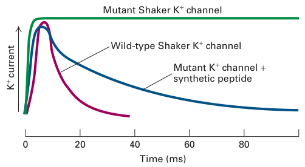
| K+ current | K+电流 |
| Time (ms) | 时间（ms） |
| Wild-type Shaker K+ channel | 野生型Shaker K+通道 |
| Mutant Shaker K+ channel | 突变型Shaker K+通道 |
| Mutant K+ channel + synthetic peptide | 突变K+通道＋合成肽 |
反之，添加随机氨基酸以延长正常的链则会减慢通道失活。
电压门控Na+通道中唯一的通道失活片段含有一个由异亮氨酸、苯丙氨酸、甲硫氨酸和苏氨酸组成的保守疏水基序（见图22-13b）。与K+通道中较长的球链结构域一样，该片段折叠进入并阻断传导Na+的孔道，直到膜复极化。
分子动力学技术为电压门控离子通道的结构与功能提供了进一步的见解。分子动力学涉及对分子和原子随时间物理运动的计算机模拟，这些模拟基于对所关注分子的结构、生物化学和分子研究得到的实验数据。对一种原核电压门控Na+通道的分子动力学研究，为电压感受、孔道开放和闸门失活提供了一幅电影般的图景。
髓鞘化提高冲动传导的速度
如我们所见，动作电位可以以高达每秒1米的速度沿无髓鞘轴突传播而不衰减。但即使是这样的高速，也不足以支持动物典型的复杂运动。例如，在成年人中，支配腿部肌肉的运动神经元胞体位于脊髓，其轴突长约1米。如果动作电位从脊髓沿运动神经元轴突传到腿部肌肉需要1秒，那么行走、奔跑及类似运动所需的协调肌肉收缩将不可能实现。解决办法是用绝缘物将细胞包裹起来，以提高动作电位的移动速率。这种绝缘物称为髓鞘（见图22-1b）。轴突周围存在髓鞘可将冲动传导速度提高到每秒10–100米。因此，在典型的人类运动神经元中，动作电位能在0.01秒内走完1米长的轴突并刺激肌肉收缩。在无髓鞘神经元中，动作电位的传导速度大致与轴突直径成正比，因为较粗的轴突可扩散的离子数目更多。人脑充满了相对较小的有髓鞘神经元。如果人脑中的神经元没有髓鞘，其轴突直径将不得不增大约10,000倍才能达到与有髓鞘神经元相同的传导速度。因此，拥有密集排布神经元的脊椎动物大脑，没有髓鞘是绝不可能演化出来的。
动作电位在有髓鞘轴突中从结到结"跳跃"
轴突周围的髓鞘由许多胶质细胞形成。由单个胶质细胞形成的每一段髓鞘与下一段之间被一段无髓鞘的轴突膜区域隔开，该区域长约1 μm，称为郎飞结（或简称结；见图22-1b）。轴突膜只在郎飞结处与细胞外液直接接触，髓鞘覆盖阻止了除郎飞结以外任何部位的离子进出轴突。此外，维持轴突内离子梯度的所有电压门控Na+和K+通道以及所有Na+/K+泵都位于郎飞结处。
由于这种定位，产生动作电位的Na+离子内流只能发生在无髓鞘的郎飞结处（图22-16）。作为动作电位的一部分，在Na+移入胞质相关的膜去极化过程中，某个郎飞结产生的胞质过量正离子通过轴突胞质被动扩散到下一个郎飞结，几乎没有损失或衰减，因为它们无法穿过有髓鞘的轴突膜。这使一个郎飞结处的去极化迅速传播到下一个郎飞结并在那里诱发动作电位，实际上使动作电位能够从一个结跳跃到下一个结。这种传递称为跳跃传导。这一现象解释了为什么有髓鞘神经元的传导速度与直径大得多的无髓鞘神经元大致相同。例如，直径12 μm的有髓鞘脊椎动物轴突与直径600 μm的无髓鞘鱿鱼轴突都以12 m/s的速度传导冲动。
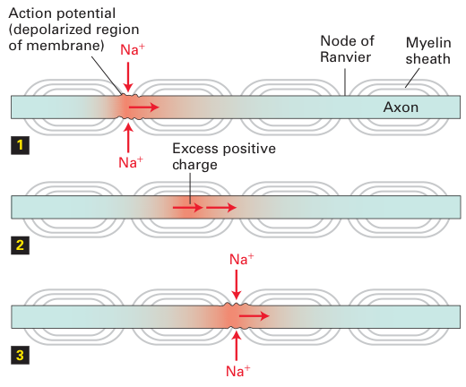
| Node of Ranvier | 郎飞结 |
| Myelin sheath | 髓鞘 |
| Axon | 轴突 |
| Action potential | 动作电位 |
| Excess positive charge | 过量正电荷 |
两类胶质细胞产生髓鞘
图22-17显示了神经系统中存在的三种主要胶质细胞，其中两种产生髓鞘：少突胶质细胞为中枢神经系统（CNS）形成髓鞘，施万细胞为外周神经系统（PNS）形成髓鞘。图中还显示了星形胶质细胞，它们促进突触形成和神经元之间的通讯，将在22.1节和22.3节中讨论。第四类胶质细胞——小胶质细胞（未显示）——构成CNS免疫系统的一部分。虽然小胶质细胞在谱系上与神经元或其他胶质细胞无关，但最近已证明它们在一类称为突触修剪的神经回路形成过程中发挥作用，将在22.3节讨论。
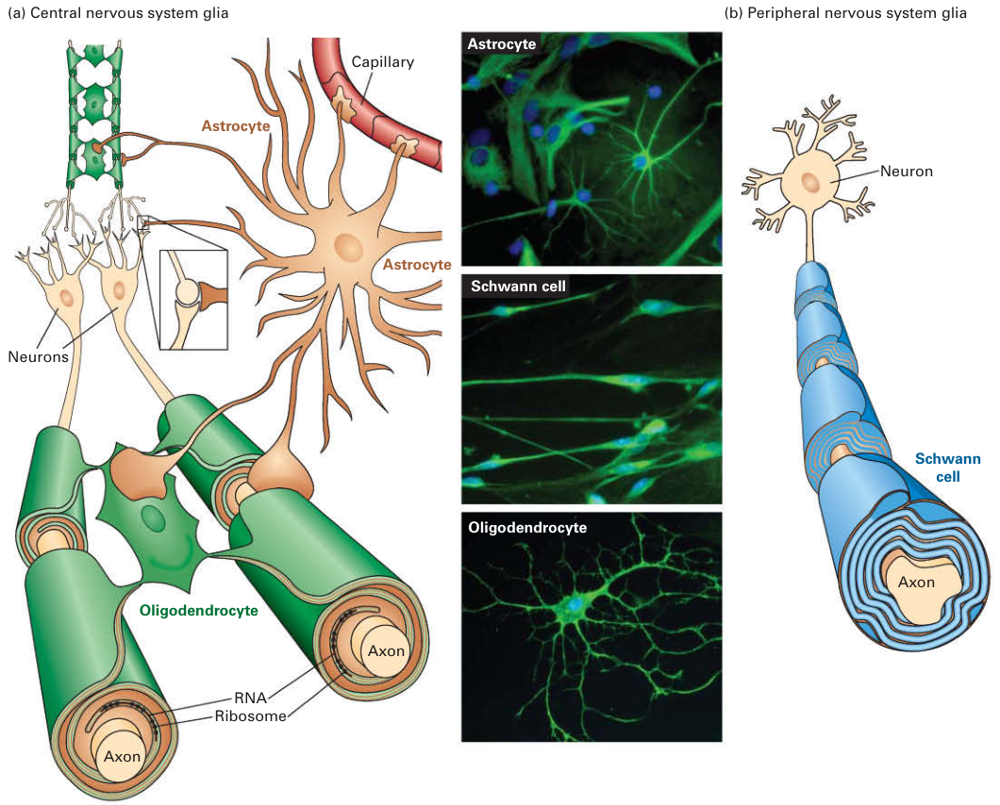
| Oligodendrocyte | 少突胶质细胞 |
| Astrocyte | 星形胶质细胞 |
| Schwann cell | 施万细胞 |
| Central nervous system glia | 中枢神经系统胶质细胞 |
| Peripheral nervous system glia | 外周神经系统胶质细胞 |
| Neuron | 神经元 |
| Axon | 轴突 |
| Capillary | 毛细血管 |
| Ribosome | 核糖体 |
| RNA | RNA |
少突胶质细胞 少突胶质细胞在CNS轴突周围形成螺旋状髓鞘（图22-17a）。每个少突胶质细胞为多个神经元的节段提供髓鞘。主要蛋白质成分是髓鞘碱性蛋白（MBP）和蛋白脂蛋白（PLP）。MBP是一种外周膜蛋白，在CNS和PNS中均存在（图22-18），有七种RNA剪接变体，编码该蛋白的不同形式。它由位于正在生长的髓鞘中的核糖体合成，这是mRNA特异性运输到远端细胞区域的一个例子（第10章）。MBP mRNA经微管依赖的运输到达少突胶质细胞的远端突起，其局部翻译参与髓鞘的形成。
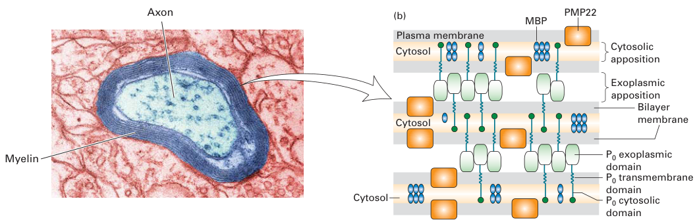
| P0 cytosolic domain | P0胞质结构域 |
| P0 exoplasmic domain | P0外质结构域 |
| P0 transmembrane domain | P0跨膜结构域 |
| PMP22 | PMP22 |
| MBP | MBP |
| Cytosol | 胞质 |
| Plasma membrane | 质膜 |
| Cytosolic apposition | 胞质面并置 |
| Exoplasmic apposition | 外质面并置 |
| Bilayer membrane | 双层膜 |
| Myelin | 髓鞘 |
| Axon | 轴突 |
少突胶质细胞产生的蛋白质受损是一种常见的人类神经系统疾病——多发性硬化（MS）——的基础。MS通常表现为一个或多个肢体的痉挛和无力、膀胱功能障碍、局部感觉丧失和视觉障碍。这种疾病——脱髓鞘疾病的原型——由脑和脊髓区域斑片状的髓鞘丢失引起。在MS患者中，脱髓鞘神经元的动作电位传导减慢，Na+通道从郎飞结向外扩散，降低了其在结处的浓度。该病的病因尚不清楚，但似乎涉及机体产生与MBP反应的自身抗体（结合正常自身蛋白的抗体），或分泌破坏髓鞘蛋白的蛋白酶。一种小鼠突变体shiverer缺失了大部分MBP基因，导致震颤、惊厥和早死。类似地，编码CNS髓鞘另一种主要蛋白PLP的基因在人类（Pelizaeus–Merzbacher病）和小鼠（jimpy）中的突变会导致少突胶质细胞丢失和髓鞘化不足。 ■
施万细胞 施万细胞在外周神经周围形成髓鞘。一个施万细胞的髓鞘是一种奇妙的螺旋包裹（图22-17b）。一条长轴突沿其长度可以有多达数百个施万细胞，每个为约1–1.5 μm的结间段轴突提供髓鞘绝缘。由于尚不清楚的原因，并非所有轴突都有髓鞘。在小鼠中消除施万细胞的突变会导致大多数神经元死亡。
与少突胶质细胞不同，每个施万细胞只髓鞘化一条轴突。髓鞘由约70%的脂质（富含胆固醇）和30%的蛋白质组成。在PNS中，髓鞘的主要蛋白成分（约80%）称为蛋白0（P0），它是一种具有免疫球蛋白（Ig）结构域的整合膜蛋白。MBP也是一种含量丰富的成分。P0的胞外Ig结构域将轴突周围连续包裹的表面结合在一起，使髓鞘的螺旋紧密压实（图22-18）。在CNS中由其他蛋白发挥这类作用。
在人类中，外周髓鞘与CNS髓鞘一样，是自身免疫病的靶标，主要涉及针对P0的抗体的形成。吉兰-巴雷综合征（GBS），又称急性炎症性脱髓鞘性多神经病，就是这样一种疾病。GBS是快速起病性瘫痪最常见的病因，发病率为每10万人中1人。病因不明，但它通常发生在急性感染性疾病之后，被认为涉及对PNS的免疫攻击。一种常见的遗传性神经系统疾病——腓骨肌萎缩症（Charcot-Marie-Tooth病）——会损害外周运动和感觉神经功能，其病因是编码PMP22蛋白（外周神经髓鞘的另一种成分）的基因过度表达。 ■
胶质细胞与神经元之间的相互作用控制着髓鞘的定位和间距，以及郎飞结处神经传递机器的组装。例如，电压门控Na+通道和Na+/K+泵通过与细胞骨架蛋白的相互作用聚集在郎飞结处。虽然郎飞结组装过程的细节尚未完全清楚，但已鉴定出许多关键参与者。在PNS中（该过程研究得最多），施万细胞膜上的表面黏附分子首先与神经元表面黏附分子相互作用。胶质细胞膜中一种称为neurofascin155的免疫球蛋白细胞黏附分子（IgCAM）在郎飞结的边缘接触两种轴突蛋白——contactin和contactin相关蛋白。这些细胞间接触事件在郎飞结的两侧形成边界。
将要在郎飞结处聚集的通道蛋白和其他分子最初分散在整个轴突中。随后，轴突蛋白——包括两种称为NrCAM和neurofascin186的IgCAM，以及锚蛋白G（第17章）——在郎飞结内聚集。这两种IgCAM结合一种在胶质细胞中表达的单一跨膜结构域蛋白gliomedin。消除gliomedin产生的实验表明，没有它郎飞结就无法形成，因此它是一个关键调节因子，也证明了胶质细胞-神经元相互作用在神经系统正常发育中的重要性。郎飞结中的锚蛋白接触βIV血影蛋白——细胞骨架的主要成分——从而将郎飞结的蛋白复合体锚定在细胞骨架上。Na+通道与neurofascin186、NrCAM和锚蛋白G结合，将通道牢固地困在轴突质膜需要它的郎飞结段。由于这些多重蛋白-蛋白相互作用，有髓鞘轴突郎飞结膜中Na+通道的浓度大约是无髓鞘神经元轴突膜的100倍。
光激活离子通道与光遗传学
衣藻（Chlamydomonas）等单细胞鞭毛虫通过趋光性（引导它们朝向光）或避光性（阻止它们朝光移动）对光作出快速反应（图1-22b）。这些快速的光运动反应由位于称为眼点的特化感光细胞器中的光激活阳离子通道介导。第一个被克隆的光激活通道来自绿藻莱茵衣藻（Chlamydomonas reinhardtii）。这个称为通道视紫红质的通道由一个七次跨膜蛋白与一个可光异构化的发色团——全反式视黄醛——共价连接而成（图22-19a、b）。这与第15章讨论的眼中用于检测光子的发色团相同（见图15-22）。当全反式视黄醛吸收一个光子时，它转变为13-顺式视黄醛，从而引起通道蛋白的构象变化，导致直径约0.6 nm的孔道开放和阳离子的快速内流。通道视紫红质是非选择性阳离子通道，可传导H+、Na+、K+和Ca2+离子。目前已鉴定出许多其他光激活阳离子通道，基因工程方法已产生了一系列设计型通道视紫红质，它们可被特定波长和强度的光激活或失活，并对不同的阳离子具有选择性。这些进展催生了令人兴奋的新领域——光遗传学，其中通道视紫红质在电兴奋性细胞中表达，从而可以用光快速且选择性地操纵细胞的膜电位（图22-19c）。
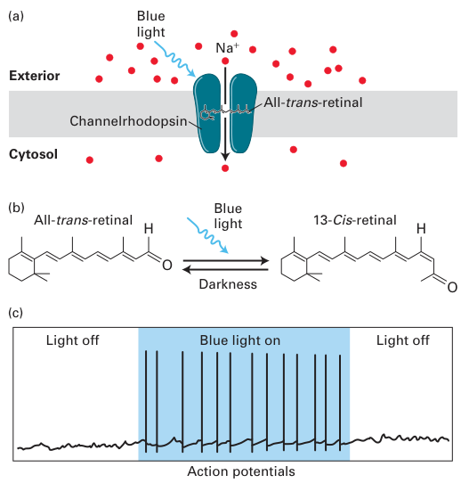
| Channelrhodopsin | 通道视紫红质 |
| All-trans-retinal | 全反式视黄醛 |
| 13-Cis-retinal | 13-顺式视黄醛 |
| Blue light | 蓝光 |
| Darkness | 黑暗 |
| Action potentials | 动作电位 |
| Exterior | 细胞外 |
| Cytosol | 胞质 |
光遗传学方法彻底改变了脑内神经回路的研究，因为它们使神经科学家能够直接检验神经回路活动对行为的影响，而不仅仅是记录神经活动并将其与行为相关联。一种常见的实验方法是制作转基因小鼠，使通道视紫红质在细胞类型特异性启动子的控制下表达（第6章所述），从而只有脑内一部分神经元表达该蛋白。然后在颅骨上开一个孔，用激光照射脑表面附近表达通道视紫红质的细胞，或者用光纤将光传递到脑深部区域表达通道视紫红质的细胞。光在神经元中触发动作电位，激活它们的回路。通过考察小鼠的行为，就能将该回路与特定行为联系起来。
作为这类实验的一个例子，最近利用光遗传学发现了脑中介导口渴的神经元的身份。为此，在小鼠下丘脑一个称为穹窿下器（SFO）的区域表达通道视紫红质（图22-20）。在一个小鼠品系中，通道视紫红质仅在兴奋性神经元中表达；在另一个小鼠品系中，它则在抑制性神经元中表达。用光纤将光传递到SFO，当用光使兴奋性神经元去极化时，小鼠表现出渴感（寻找水并大量饮水），但当抑制性神经元被激活时，渴感受到抑制。另外的实验表明，饮水反应对水具有特异性，矿物油或甘油等其他化合物不能激活它。总之，这些实验证明下丘脑SFO中的神经元调节渴感，兴奋性神经元的激活促进渴感，而抑制性神经元的激活抑制渴感。类似方法已被用于揭示许多其他行为背后的回路，包括运动、摄食和过度进食、焦虑、攻击以及其他社会行为。此外，光遗传学方法可与其他方法（如钙成像；见第4章及下文22.3节）结合，用于绘制脑内特定回路的解剖结构。具体做法是用光激活特定神经元，然后用成像方法（例如通过监测钙动态）显示下游神经元中的活动。
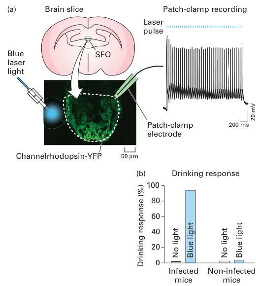
| Brain slice | 脑片 |
| Blue laser light | 蓝色激光 |
| Laser pulse | 激光脉冲 |
| Patch-clamp recording | 膜片钳记录 |
| Patch-clamp electrode | 膜片钳电极 |
| Infected mice | 感染小鼠 |
| Non-infected mice | 未感染小鼠 |
| Drinking response | 饮水反应 |
| Blue light | 蓝光 |
| No light | 无光 |
| SFO | SFO |
| Channelrhodopsin-YFP | 通道视紫红质-YFP |
- 动作电位是突发的膜去极化，随后迅速复极化。
- 动作电位由神经元和肌细胞（可兴奋细胞）质膜上电压门控Na+和K+通道的依次开放与关闭所产生（见图22-10）。
- 电压门控Na+通道的开放允许Na+离子内流约1毫秒，引起膜某一段突然大幅去极化。随后通道关闭并在数毫秒内无法开放（不应期），阻止Na+的进一步流动（见图22-10）。
- 当动作电位达到峰值时，电压门控K+通道的开放允许K+离子外流，使膜复极化继而超极化。随着这些通道关闭，膜回到其静息电位（见图22-2和图22-9）。
- 轴突某一点产生的动作电位所伴随的胞质过量阳离子被动扩散到相邻节段，触发附近电压门控Na+通道开放，从而使动作电位沿轴突传播。
- 由于电压门控Na+通道的绝对不应期以及K+外流引起的短暂超极化，动作电位只朝一个方向传播，即朝向轴突末梢（见图22-12）。
- 电压门控Na+通道是单体蛋白，含有四个结构域，在结构和功能上分别类似于四聚体电压门控K+通道中的每个亚基。电压门控阳离子通道中的每个结构域或亚基都含有六个跨膜α螺旋和一个形成离子选择性孔道的非螺旋P片段（见图22-13）。
- 电压门控通道的开放源于带正电的S1–S4桨在足够幅度的去极化作用下朝膜的细胞外侧移动（见图22-14）。
- 电压门控阳离子通道的关闭和失活源于胞质"球"片段移入开放的孔道（见图22-10）。
- 虽然电压门控K+通道与电压门控Na+通道的电压感受器和失活闸门相似，但选择性过滤器的结构不同，它决定了通过通道传导的离子类型的特异性。
- 髓鞘化可将冲动传导速率提高多达一百倍，使脊椎动物大脑特有的神经元密集排布成为可能。
- 在有髓鞘神经元中，电压门控Na+通道集中在郎飞结处。一个郎飞结处的去极化几乎不衰减地迅速传播到下一个郎飞结，使动作电位从一个结跳跃到下一个结（见图22-16）。
- 髓鞘由以螺旋方式包裹神经元的胶质细胞产生。少突胶质细胞为CNS产生髓鞘；施万细胞为PNS产生髓鞘（见图22-17）。
- 光遗传学领域正在彻底改变神经回路的研究。它涉及在神经元中通过遗传学方法表达称为通道视紫红质的光激活阳离子通道，以及用光特异性地激活或抑制该群神经元。通过这种方式，神经科学家可以将特定神经回路与特定行为直接联系起来。
22.3 突触通讯
如我们已讨论过的，电脉冲沿神经元传递信号，但神经元与其他可兴奋细胞之间的信号传递主要依靠化学信号。突触是突触前神经元释放这些化学信号（即神经递质）的连接点，这些递质随后作用于突触后靶细胞（见图22-3）。靶细胞可以是另一个神经元、一块肌肉或一个腺细胞。化学突触处的通讯通常只沿一个方向进行：从突触前细胞到突触后细胞。
动作电位到达突触前细胞的轴突末梢，会导致电压敏感性Ca2+质膜通道开放，并引起Ca2+内流，从而使轴突末梢内胞质Ca2+浓度局部升高。Ca2+的升高转而触发小的（40–50 nm）含神经递质的突触小泡与质膜融合，把神经递质释放到突触间隙——分隔突触前细胞与突触后细胞的狭窄空间。突触后细胞的膜位于突触前膜约20 nm范围内，从而缩短了神经递质必须扩散的距离。
神经递质——小的水溶性分子，如谷氨酸（兴奋性）或γ-氨基丁酸（GABA，抑制性）——与突触后细胞上的受体结合，这些受体转而引起其质膜两侧电位的局部变化。如果膜电位变得不那么负——即发生去极化——就倾向于在突触后细胞中诱发出动作电位。这类突触是兴奋性突触，通常涉及突触后质膜上Na+通道的开放。相反，在抑制性突触中，神经递质与突触后细胞上受体的结合会导致质膜超极化——产生内侧更负的电位。通常，超极化是突触后质膜上Cl−或K+通道开放的结果，这会倾向于阻碍动作电位的产生。
神经递质受体分为两大类：配体门控离子通道，它们在神经递质结合后立即开放；以及代谢型G蛋白偶联受体（GPCR）。神经递质与GPCR结合，会在数秒至数分钟内诱导一个独立的离子通道蛋白开放或关闭。这些"慢速"神经递质受体已在第15章中与GPCR一同讨论过，后者结合不同类型的配体，并调节离子通道以外的胞质蛋白的活性。在中枢神经系统中，谷氨酸和GABA主要与离子型受体结合，分别介导兴奋和抑制；而血清素、多巴胺等神经调质则与代谢型受体结合。在外周神经系统中，主要的神经递质是乙酰胆碱和去甲肾上腺素（也称noradrenaline），二者同样也表达于中枢神经系统。
神经递质信号的持续时间取决于突触前细胞释放的递质量，而后者又取决于此前储存的递质量以及到达突触的动作电位频率。信号的持续时间还取决于未被结合的神经递质在突触间隙中被降解或被运回突触前细胞的速度。突触前细胞的质膜以及胶质细胞都含有转运蛋白，它们把神经递质泵过质膜运回细胞内，从而使细胞外的递质浓度保持较低水平。
本节我们先讨论突触如何形成，以及它们如何在第14章所述囊泡运输基本原理的框架下控制神经递质的受调控分泌。接下来我们探讨限制突触信号持续时间的机制，以及突触后细胞如何接收和解读神经递质。
突触的形成需要组装突触前与突触后结构
发育过程中，轴突从胞体伸出，沿途受其他细胞信号的引导，使轴突末梢能到达正确的位置（见18.8节）。轴突生长时会与其潜在靶细胞（如其他神经元的树突）接触，突触往往就在这些位点形成。在中枢神经系统中，具有突触前特化的突触可沿整条轴突频繁出现，称为中途（en passant）突触；相比之下，运动神经元只在轴突末梢与肌细胞形成突触。
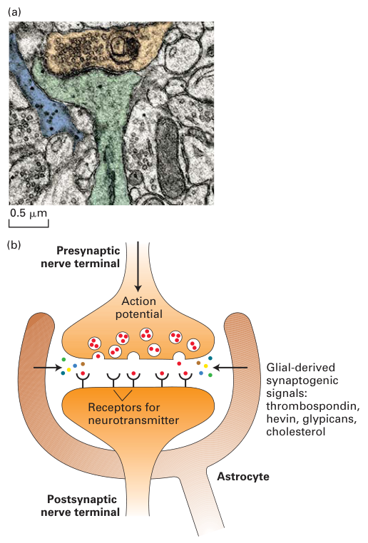
| presynaptic nerve terminal | 突触前神经末梢 |
| postsynaptic nerve terminal | 突触后神经末梢 |
| astrocyte | 星形胶质细胞 |
| action potential | 动作电位 |
| neurotransmitter receptor | 神经递质受体 |
单独培养的神经元不能很有效地形成突触，但加入胶质细胞后，突触形成的速率大幅提高。星形胶质细胞和施万细胞向神经元发送蛋白质信号，刺激突触形成，随后帮助维持这些突触。其中一种信号是血小板反应蛋白（thrombospondin，TSP），它是细胞外基质的组分之一；缺失两个血小板反应蛋白基因的小鼠，脑内突触数量只有正常水平的70%。功能性突触的形成还需要其他胶质细胞来源的信号，包括胶质细胞来源的胆固醇、细胞外基质蛋白hevin以及glypican（硫酸乙酰肝素蛋白聚糖）。神经元与其周围的胶质细胞之间频繁而复杂的相互通讯，使二者传递的信号和信息成为活跃的研究领域。新的成像方法揭示，星形胶质细胞形成大量小分支，与神经元交错并包裹突触。因此，星形胶质细胞不仅提供促进突触形成的胶质来源因子，而且许多神经科学家提出，由突触前和突触后伙伴组成的突触应被视为"三联突触"，它不仅由突触前和突触后神经元成分构成，还包括星形胶质细胞（见图22-21）。
在突触部位，突触前神经元有数百到数千个突触小泡，其中一些锚定在膜上，另一些则储备待用。神经递质释放到突触间隙的过程发生在活性带——质膜上一个特化的区域，其中含有大量蛋白质组成的复杂集合体，其功能包括改变突触小泡的性质，并把它们摆放到与质膜锚定和融合的位置。在电子显微镜下，活性带具有电子致密物质和细小的细胞骨架丝（图22-22）。在突触对侧也可见一个类似的、由特化结构组成的致密区域，即突触后细胞中的突触后致密区（PSD）。连接突触前与突触后细胞的细胞黏附分子使活性带与PSD保持对齐。在动作电位引发突触小泡释放之后，突触前神经元通过内吞作用回收突触小泡膜蛋白，这一过程既发生在活性带内，也发生在活性带外。
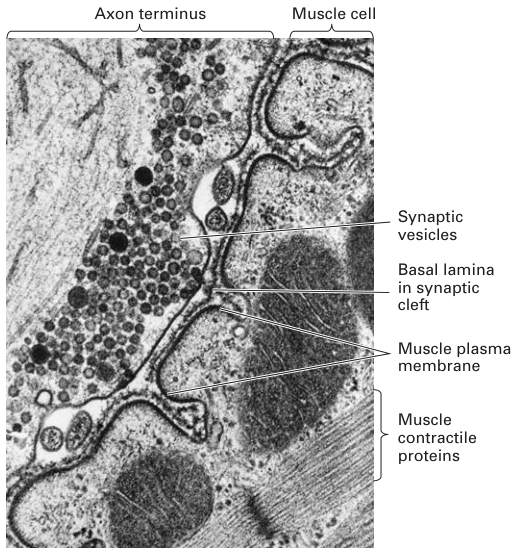
| synaptic vesicle | 突触小泡 |
| axon terminus | 轴突末梢 |
| basal lamina | 基板 |
| synaptic cleft | 突触间隙 |
| muscle plasma membrane | 肌质膜 |
| muscle contractile protein | 肌肉收缩蛋白 |
| muscle cell | 肌细胞 |
突触组装已在神经肌肉接头（NMJ）中得到广泛研究（图22-23）。在这些突触中，乙酰胆碱是运动神经元产生的神经递质，其受体AChR由突触后肌细胞产生。肌细胞的前体——成肌细胞——放入培养后会自发融合成多核的肌管，其外观与正常肌细胞相似。随着肌管的形成，AChR在细胞中央附近产生并插入肌管质膜，形成弥散的膜斑块（图22-23a）。
神经肌肉突触的形成是一个多步骤过程，需要运动神经元与肌纤维之间的信号相互作用。一个关键角色是MuSK，一种受体酪氨酸激酶，定位于肌管质膜上富含AChR的弥散斑块中。MuSK既能诱导AChR成簇聚集，又能吸引生长中运动神经元轴突的末梢，其方式尚不清楚。例如，敲低MuSK会同时抑制这两个过程，而在培养的肌细胞中过表达MuSK则会在整块肌肉中诱导运动神经元生长并形成过多的突触。
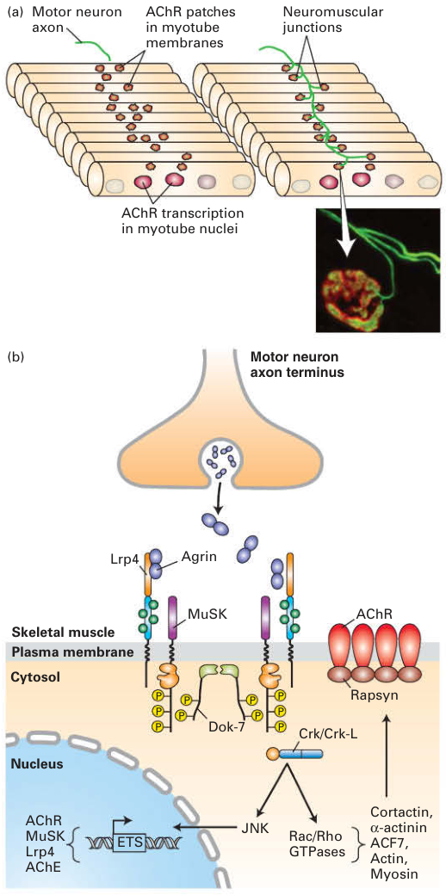
| motor neuron axon | 运动神经元轴突 |
| AChR patches in myotube membranes | 肌管膜中的AChR斑块 |
| AChR transcription in myotube nuclei | 肌管细胞核中的AChR转录 |
| neuromuscular junction | 神经肌肉接头 |
| motor neuron axon terminus | 运动神经元轴突末梢 |
| agrin | Agrin |
| LRP4 | LRP4 |
| MuSK | MuSK |
| Dok-7 | Dok-7 |
| rapsyn | rapsyn |
| AChR | 乙酰胆碱受体（AChR） |
| AChE | 乙酰胆碱酯酶（AChE） |
| Rac/Rho GTPase | Rac/Rho GTP酶 |
| actin, myosin | 肌动蛋白、肌球蛋白 |
| cortactin, α-actinin | cortactin、α-辅肌动蛋白 |
另一个关键角色是Agrin，一种由发育中的运动神经元合成的糖蛋白，沿轴突微管以囊泡形式运输，并分泌到发育中的肌管附近。Agrin与LRP4结合，后者是一种单次跨膜蛋白；这会刺激LRP4与MuSK结合，并增加MuSK的激酶活性（图22-23b）。这导致多条下游信号转导通路被激活，其中一条通路激活Rac和Rho（见17.3节），并形成AChR与细胞骨架蛋白rapsyn的聚簇；这种相互作用连同肌动蛋白等其他细胞骨架蛋白的结合，使AChR定位到神经肌肉接头处神经末梢的对面。成熟突触中乙酰胆碱受体的密度可达约10,000–20,000/μm2，而质膜其他部位的密度约为10/μm2。另一条通路（同样了解不多）导致ETS家族转录因子被激活，并刺激多个编码突触蛋白（如rapsyn和AChR）的基因表达。
中枢神经系统中突触形成的分子机制了解得较少，但这一过程似乎遵循类似的逻辑，即突触前与突触后区室之间的相互作用触发已合成突触成分的重组。与rapsyn在神经肌肉突触中使ACh受体成簇聚集的功能类似，在中枢神经系统中，不同的支架蛋白使兴奋性和抑制性突触上的神经递质受体成簇聚集。一种含PDZ结构域（PDZ结构域的定义见第20章）的大型蛋白PSD95在兴奋性突触上使谷氨酸受体聚集，而另一种支架蛋白gephyrin则在抑制性突触上使GABA和甘氨酸受体聚集（图22-24）。突触前与突触后区室由跨突触的细胞黏附分子网络连接，这些分子的黏附相互作用非常强，以致无法用生化方法把突触前区室与突触后区室分开。这些黏附分子包括钙黏蛋白、含免疫球蛋白的细胞黏附分子（见第20章）、neurexin和neuroligin、ephrin以及Eph受体。突触黏附分子通过其胞内结构域结合支架蛋白和细胞骨架元件，促进突触前和突触后区室中蛋白质复合物的组织化。混合细胞培养体系——把原代神经元与表达某种感兴趣黏附分子的非神经元细胞一起培养——已被证明有助于证明特定黏附分子促进突触组装的能力。例如，在非神经元细胞中表达突触后黏附分子neurexin，就足以促发轴突中的突触前特化，包括形成带突触小泡簇的活性带成分。
神经系统中精确的线路连接不仅涉及突触形成，还涉及突触消除。出生时，大多数动物出生时突触数量过多，神经回路的成熟涉及一个关键的突触修剪过程，该过程会消除大量突触。突触修剪依赖于神经活动，研究表明较弱的突触被消除，而较强的突触得到保留。例如，出生时每个肌细胞由多个运动神经元支配，但随时间推移，许多运动神经元接触被消除，最终每个肌细胞只由一个运动神经元支配。这种突触消除过程依赖于肌细胞的活动：如果用药物使肌细胞沉默，它就永远不会失去多神经元支配。突触消除背后的细胞生物学机制，包括决定哪些突触应被消除的机制以及消除过程本身，都是活跃的研究领域。许多近期研究揭示了星形胶质细胞和小胶质细胞在突触修剪过程中吞噬被消除突触的作用。
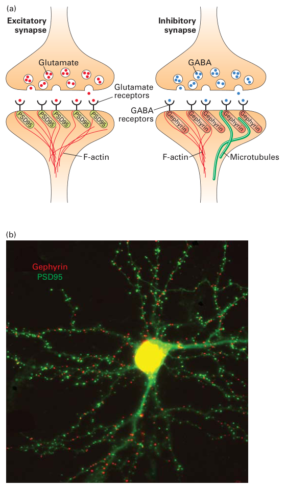
| excitatory synapse | 兴奋性突触 |
| inhibitory synapse | 抑制性突触 |
| glutamate receptor | 谷氨酸受体 |
| GABA receptor | GABA受体 |
| PSD95 | PSD95 |
| gephyrin | gephyrin |
| F-actin | F-肌动蛋白 |
| microtubule | 微管 |
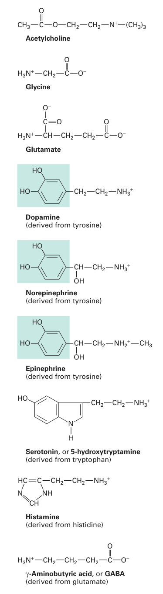
| glutamate | 谷氨酸 |
| glycine | 甘氨酸 |
| acetylcholine | 乙酰胆碱 |
| dopamine (derived from tyrosine) | 多巴胺（由酪氨酸衍生） |
| norepinephrine (derived from tyrosine) | 去甲肾上腺素（由酪氨酸衍生） |
| epinephrine (derived from tyrosine) | 肾上腺素（由酪氨酸衍生） |
| serotonin, or 5-hydroxytryptamine (derived from tryptophan) | 血清素，即5-羟色胺（由色氨酸衍生） |
| histamine (derived from histidine) | 组胺（由组氨酸衍生） |
| γ-aminobutyric acid, or GABA (derived from glutamate) | γ-氨基丁酸，即GABA（由谷氨酸衍生） |
神经递质通过H+偶联反向转运蛋白被运入突触小泡
本节我们关注神经递质如何在轴突末梢被包装进膜结合的突触小泡。许多小分子在各类突触中充当神经递质。如图22-25所示，除乙酰胆碱外，最常见的神经递质都是氨基酸或氨基酸的衍生物。ATP等核苷酸以及相应的缺少磷酸基团的核苷，也可充当神经递质。以往认为神经元只产生一种神经递质，但更近期的研究表明，有些神经元能产生并释放一种以上的神经递质。虽然神经递质的种类繁多，且它们作用于神经系统的不同部位，但所有神经递质信号传导最终都产生两种结果之一：要么诱导电信号，要么抑制电信号。
所有这些神经递质都在胞质中合成，并被输入轴突末梢内膜结合的突触小泡中储存。这些突触小泡直径40–50 nm，其腔内pH较低，这是由小泡膜上的V型质子泵运转产生的。与代谢物在植物液泡中积累的方式类似（见图11-29），这种质子浓度梯度（小泡腔内 > 胞质）
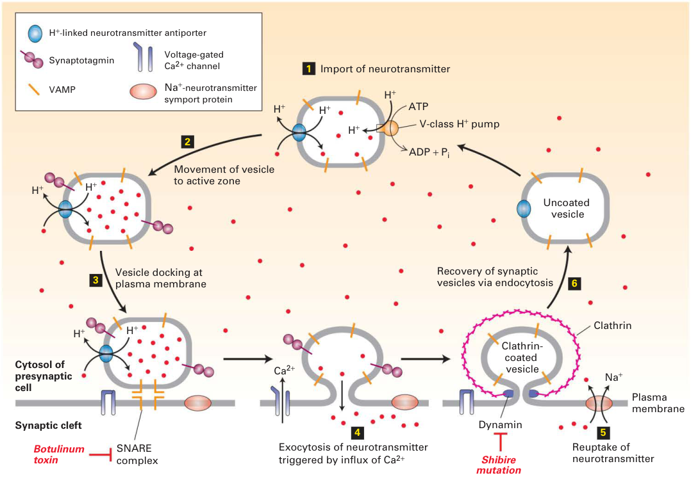
| synaptic cleft | 突触间隙 |
| exocytosis of neurotransmitter | 神经递质胞吐 |
| recovery of synaptic vesicles via endocytosis | 通过内吞回收突触小泡 |
| clathrin-coated vesicle | 网格蛋白包被囊泡 |
| uncoated vesicle | 脱包被囊泡 |
| V-class H+ pump | V型H+泵 |
| H+-linked neurotransmitter antiporter | H+偶联神经递质反向转运蛋白 |
| Na+-neurotransmitter symport protein | Na+-神经递质同向转运蛋白 |
| voltage-gated Ca2+ channel | 电压门控Ca2+通道 |
| SNARE complex | SNARE复合物 |
| botulinum toxin | 肉毒杆菌毒素 |
| synaptotagmin | synaptotagmin |
| dynamin | dynamin |
| VAMP | VAMP |
| shibire mutation | shibire突变 |
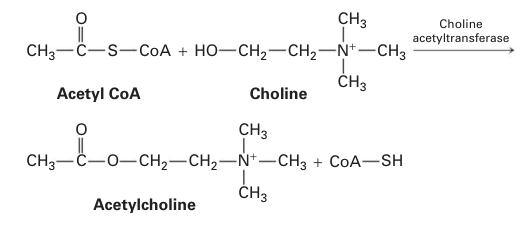
为神经递质的输入提供动力，由小泡膜上配体特异性的H+偶联神经递质反向转运蛋白完成（图22-26）。
例如，乙酰胆碱在胞质中由乙酰辅酶A（acetyl CoA，葡萄糖和脂肪酸降解的中间产物）和胆碱合成，反应由胆碱乙酰转移酶催化：突触小泡利用小泡膜上的H+/乙酰胆碱反向转运蛋白，逆着陡峭的浓度梯度从胞质中摄取并浓集乙酰胆碱。与其他反向转运蛋白一样，质子从形成中的小泡沿其电化学梯度外流，为神经递质的摄取提供动力。作为确保这两种蛋白质协同表达的进化机制的一个例子，编码该反向转运蛋白的基因完全位于编码胆碱乙酰转移酶的基因的第一个内含子内。
其他神经递质输入突触小泡时使用不同的H+/神经递质反向转运蛋白。例如，谷氨酸由一类称为囊泡谷氨酸转运体（VGLUT）的蛋白质输入突触小泡。VGLUT对谷氨酸高度特异，但底物亲和力相当低（Km = 1–3 mM）。另一类转运体——囊泡GABA转运体（VGAT）——把GABA和甘氨酸运入突触小泡。与乙酰胆碱转运体一样，VGLUT和VGAT都是反向转运蛋白，把谷氨酸以及GABA或甘氨酸运入突触小泡，同时质子向相反方向移动。VGLUT和VGAT分别是兴奋性和抑制性突触末梢的有用标记。
突触前末梢中存在三个装载神经递质的突触小泡池
轴突末梢中高度有序的细胞骨架纤维排布有助于把突触小泡定位在突触前末梢内。据提出，突触小泡群体以三种状态存在：一个小的易释放池，锚定在质膜附近的活性带；一个较大的循环池，靠近质膜但未锚定，在中等强度刺激下释放；以及一个储备池，包含末梢中大多数突触小泡，距离活性带最远，只在强刺激下释放。一个称为synapsin的磷蛋白家族把突触小泡拴系到肌动蛋白细胞骨架上以及彼此之间。神经元刺激激活激酶使synapsin磷酸化，从而调节突触小泡的拴系，并因此改变可供释放的突触小泡数量。事实上，synapsin敲除小鼠虽然能存活，但易发生癫痫发作；在此类小鼠中许多神经元受到重复刺激时，与质膜融合的突触小泡数量大幅减少。
Ca2+内流触发神经递质的释放
神经递质从突触小泡的胞吐涉及囊泡靶向和融合事件，与分泌蛋白和质膜蛋白在胞内运输过程中发生的事件相似（第14章）。然而，对突触功能至关重要的两个独特特征使其有别于其他分泌途径：(1) 分泌与动作电位到达轴突末梢紧密偶联；(2) 突触小泡与质膜融合后在轴突末梢局部再循环。图22-26展示了整个循环过程：突触小泡被装满神经递质、释放其内容物，然后被再循环。
质膜去极化本身并不能使突触小泡与质膜融合。为了触发小泡融合，动作电位必须被转换为化学信号——即胞质Ca2+浓度的局部升高。电信号的转换器是电压门控Ca2+通道，它们定位于紧邻突触小泡的质膜区域。动作电位到达引起的膜去极化使这些通道开放，允许Ca2+离子从细胞外液流入轴突末梢中靠近锚定突触小泡的区域。重要的是，胞质Ca2+的升高是局部的；它也是短暂的，因为过量的Ca2+会被质膜Ca2+泵迅速泵出细胞。
细菌的电压依赖性Na+通道很可能是电压依赖性Na+通道和Ca2+通道的共同进化祖先。具体而言，电压感受模块和孔模块的结构，以及电压依赖性激活和慢速电压依赖性失活背后的结构机制，都是保守的。在这些通道中，细菌电压门控Ca2+通道的独特之处在于它对钙离子具有选择性。当细胞外Na+浓度为140 mM而细胞外Ca2+浓度仅为2 mM时，该通道如何实现对Ca2+的高效且选择性传导？为确定这种选择性的结构基础，科学家把细菌电压依赖性Na+通道选择性孔中的残基突变为电压门控Ca2+通道中发现的残基。这把细菌通道变成了一个电压依赖性Ca2+通道，其结构可用X射线晶体学解析。这些研究表明，把选择性过滤器中的一个丝氨酸残基突变为天冬氨酸，就能把该通道转变为钙选择性通道，以单层水合壳传导钙离子。这一突变，连同改变孔道电负性的其他突变，提供了足够的选择性，使通道在细胞外空间Na+离子相对丰富的情况下仍优先传导Ca2+而非Na+。虽然电压门控Na+和K+通道是动作电位产生的最重要贡献者，但电压门控Ca2+通道对于把电信号转换为化学信号至关重要，因为钙流入神经元会触发一系列信号转导级联反应，导致突触小泡释放并把电信号从一个神经元传递到另一个神经元。
荧光Ca2+指示剂的开发，为在培养的神经元和完整神经回路中可视化突触活动提供了强大手段。如第4章所讨论的，这些指示剂是荧光分子，在结合Ca2+时改变其荧光发射，包括化学指示剂和遗传编码的指示剂。把Ca2+指示剂递送或表达到回路中的神经元，使实验者能够用延时显微术实时监测数百个神经元和胶质细胞中的Ca2+瞬变。例如，在小鼠视觉皮层中表达遗传编码的Ca2+指示剂GCaMP6，结合视觉刺激的呈现和体内双光子显微术，已被用于鉴定对特定朝向视觉信息作出反应的神经元群体（图22-27）。
一次动作电位会导致突触前末梢中约10%的突触小泡发生胞吐。突触小泡特有的膜蛋白随后被内吞作用特异性地内化，通常经由其他类型细胞用来回收质膜蛋白的同类网格蛋白包被小泡。内吞的囊泡失去网格蛋白外壳后，会迅速被重新装满神经递质。许多神经元能每秒发放50次，这是囊泡膜蛋白再循环相当迅速的明确证据。内吞和胞吐的机器高度保守，第14章有更详细的描述。
一种钙结合蛋白调控突触小泡与质膜的融合
突触小泡与轴突末梢质膜的融合依赖于SNARE（与其他受调控分泌囊泡的膜融合所依赖的同类蛋白）和SM蛋白（即Sec1/Munc18样蛋白）。突触小泡中的主要v-SNARE（VAMP）紧紧结合轴突末梢质膜中的主要t-SNARE——syntaxin和SNAP-25，形成四螺旋SNARE复合物。SNARE复合物的组装使突触小泡膜与突触前质膜紧靠在一起，但融合孔的形成还需要额外一步：SM蛋白与syntaxin结合。融合之后，轴突末梢内的蛋白质促进VAMP与t-SNARE解离，如图14-10所描绘的分泌囊泡融合那样。
VAMP在神经递质胞吐中作用的强有力证据来自肉毒杆菌毒素的作用机制。肉毒杆菌毒素是一种细菌蛋白，能引起肉毒中毒（一种食物中毒）所特有的瘫痪和死亡。该毒素由两条多肽组成：一条结合到在肌肉细胞突触处释放乙酰胆碱的运动神经元上，便于另一条多肽（一种蛋白酶）进入轴突末梢的胞质。这种蛋白酶切割的唯一蛋白质就是VAMP（见图22-26第3步）。肉毒杆菌蛋白酶进入轴突末梢后，尚未锚定的突触小泡迅速失去与质膜融合的能力，因为VAMP被切割会阻止SNARE复合物的组装。由此造成的神经肌肉突触处乙酰胆碱释放受阻会导致瘫痪。然而，已经锚定的囊泡对毒素表现出显著抗性，这表明当囊泡锚定在突触前膜上时，SNARE复合物可能已经处于部分组装、抗蛋白酶的状态。 ■
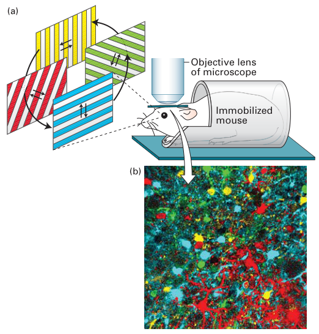
| objective lens of microscope | 显微镜物镜 |
| immobilized mouse | 固定的小鼠 |
触发已锚定突触小泡胞吐的信号，是囊泡附近胞质Ca2+浓度的高度局部化升高：从静息细胞特征的0.1 μM升至受刺激细胞中动作电位到达后的1–100 μM。胞质Ca2+升高后突触小泡与突触前膜融合的速度（小于1 ms）表明，融合机器在静息状态下已完全组装，并能迅速发生构象变化，导致神经递质胞吐（图22-28）。一种称为synaptotagmin的Ca2+结合蛋白位于突触小泡膜中，是囊泡融合机器的关键组分，负责响应Ca2+触发胞吐。一种称为complexin的蛋白被认为结合到组装好的v-SNARE/t-SNARE复合物的α螺旋束上，该复合物桥接突触小泡与质膜，从而阻止最后的融合步骤。Ca2+与synaptotagmin结合可解除这种抑制，释放complexin，使融合事件得以非常迅速地发生。虽然synaptotagmin发挥作用的机制尚有争议，但图22-28描绘了一个被广泛接受的模型。
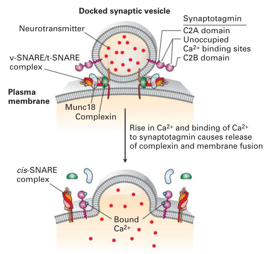
| plasma membrane | 质膜 |
| v-SNARE/t-SNARE complex | v-SNARE/t-SNARE复合物 |
| neurotransmitter | 神经递质 |
| complexin | complexin |
| Munc18 | Munc18 |
| synaptotagmin | synaptotagmin |
| C2A domain | C2A结构域 |
| C2B domain | C2B结构域 |
| unoccupied Ca2+ binding site | 未占据的Ca2+结合位点 |
| bound Ca2+ | 结合的Ca2+ |
| docked synaptic vesicle | 锚定的突触小泡 |
| cis-SNARE complex | cis-SNARE复合物 |
多条证据支持synaptotagmin作为神经递质胞吐的Ca2+感受器。完全缺失synaptotagmin的黑腹果蝇和秀丽隐杆线虫突变胚胎无法孵化，并表现出极度减弱且不协调的肌肉收缩。带有synaptotagmin部分功能丧失突变的幼虫能够存活，但其神经元在Ca2+刺激的囊泡胞吐方面存在缺陷。此外，在小鼠中，降低synaptotagmin对Ca2+亲和力的突变会导致触发快速胞吐所需的胞质Ca2+量相应增加。哺乳动物表达多种不同的synaptotagmin同工型，每种对Ca2+的结合亲和力不同，因此胞吐动力学取决于神经元中表达的那种synaptotagmin同工型。
突触小泡胞吐的一个重要特点是其速度。突触小泡融合发生在动作电位到达后的几百微秒之内，这与Ca2+经电压门控Ca2+通道流入的时间尺度相差不大。使这种速度成为可能的是释放机器与电压门控Ca2+通道的邻近。这种邻近由两种支架蛋白介导，即RIM（Rab3相互作用蛋白）和RIM-BP（RIM结合蛋白），它们在含Rab3的突触小泡与电压门控Ca2+通道之间形成复合物。在缺乏RIM的小鼠和缺乏RIM-BP的果蝇中，活性带缺乏电压门控Ca2+通道，导致神经递质释放急剧减少并失去同步。
缺乏dynamin的果蝇突变体不能再循环突触小泡
突触小泡主要通过轴突末梢质膜的内吞出芽形成。内吞通常涉及网格蛋白包被小窝，并且相当特异：若干突触小泡特有的膜蛋白（如神经递质转运体）被特异性地掺入内吞的囊泡，而驻留的质膜蛋白（如电压敏感性Ca2+通道）则留在原处。通过这种方式，突触小泡膜蛋白可以被重复利用，再循环的囊泡则被重新装满神经递质（见图22-26第6步）。
与其他网格蛋白/AP包被囊泡的形成一样，内吞的突触小泡的缢断需要GTP结合蛋白dynamin（见图14-19）。事实上，对一种称为shibire（shi）的果蝇温度敏感突变体（它编码果蝇的dynamin蛋白）的分析，为dynamin在内吞中的作用提供了早期证据。
在20 °C的许可温度下，突变果蝇正常；但在30 °C的非许可温度下，它们会瘫痪（shibire在日语中意为"瘫痪"），因为神经元和其他细胞中网格蛋白包被小窝的缢断被阻断。在电子显微镜下观察时，30 °C下的shi神经元显示出大量具有长颈的网格蛋白包被小窝，但网格蛋白包被囊泡很少。shi突变体在非许可温度下的神经末梢外观，与在不可水解的GTP类似物存在下孵育的正常神经元的末梢相似（见图14-20）。由于无法缢断出新的突触小泡，当果蝇被转移到非许可温度时，shi突变体中的神经元最终会耗尽突触小泡，导致突触信号停止和瘫痪。
突触处的信号通过神经递质的降解或重摄取而终止
神经递质从突触前细胞释放后，必须被移除或破坏，以防止对突触后细胞的持续刺激。信号可以通过递质扩散离开突触间隙而终止，但这是一个缓慢的过程。相反，在大多数突触中，两种更迅速的机制之一会终止神经递质的作用。
乙酰胆碱的信号传导在其被乙酰胆碱酯酶水解为乙酸和胆碱时终止，该酶定位于突触间隙。该反应释放的胆碱由Na+/胆碱同向转运体运回突触前轴突末梢，用于合成更多乙酰胆碱。该转运体的运作方式类似于把葡萄糖逆浓度梯度运入细胞的Na+偶联同向转运体（见图11-26）。
除乙酰胆碱外，图22-25所示的所有神经递质都是通过运回释放它们的轴突末梢而从突触间隙中移除的。因此这些递质被完整地再循环，如图22-26（第5步）所描绘。GABA、去甲肾上腺素、多巴胺和血清素的转运体是最早被克隆和研究的。这四种转运蛋白都是Na+偶联同向转运体。它们的氨基酸序列有60–70%相同，且各自被认为含有12个跨膜α螺旋。与其他Na+同向转运体一样，Na+沿其电化学梯度进入细胞为神经递质的摄取提供能量。为维持电中性，Cl−常与Na+和神经递质一起经离子通道转运。
神经递质转运体是多种滥用药物以及精神病学中常用的许多治疗药物的靶点。可卡因结合并抑制去甲肾上腺素、血清素和多巴胺的转运体。特别是，可卡因与多巴胺转运体结合会抑制多巴胺的重摄取，使高于正常浓度的多巴胺留在突触间隙中，并延长对突触后神经元的刺激。长期接触可卡因（如习惯性使用时所发生的）会导致多巴胺受体下调，从而改变多巴胺能信号的调控。据认为，长期使用可卡因后多巴胺能信号减弱，可能促成抑郁性情绪障碍，并使重要的脑奖赏回路对可卡因的强化效应变得敏感，从而导致成瘾。类似地，抗抑郁药氟西汀（Prozac，百忧解）和丙咪嗪等治疗药物阻断血清素重摄取，三环类抗抑郁药地昔帕明阻断去甲肾上腺素重摄取。因此，这些药物也会使高于正常浓度的神经递质留在突触间隙中，延长对突触后神经元的刺激。氟西汀以及作用类似的药物如帕罗西汀（Paxil）和舍曲林（Zoloft）常被统称为选择性血清素重摄取抑制剂（SSRI）。 ■
乙酰胆碱门控阳离子通道的开放导致肌肉收缩
本节我们以运动神经元与肌肉之间的通讯为例，考察突触后细胞上的受体结合神经递质后如何引起细胞膜电位的变化。在这些称为神经肌肉接头的突触处，乙酰胆碱是神经递质。一只青蛙运动神经元的单个轴突末梢可能含有一百万个或更多突触小泡，每个小泡含1000–10,000个乙酰胆碱分子；这些囊泡常常在活性带中成排聚集（见图22-23和图22-24）。这样一个神经元可以在数百个位点与单个骨骼肌细胞形成突触。
在肌细胞中表达的烟碱型乙酰胆碱受体是一种配体门控通道，可同时通过K+和Na+。这些受体也在脑神经元中产生，对学习和记忆很重要；在精神分裂症、癫痫、药物成瘾和阿尔茨海默病中可观察到这些受体的丢失。抗乙酰胆碱受体抗体构成了重症肌无力这种疾病自身免疫反应性的主要部分。该受体之所以如此命名，是因为它能被尼古丁结合；它与吸烟者的尼古丁成瘾有关。该受体至少有14种不同的同工型，它们组装成性质各异的同源和异源五聚体。鉴于其众多生理功能和在疾病中的作用，这些不同的同工型是新药开发的重要靶点 ■
乙酰胆碱对该受体的作用，可通过从肌质膜分离的外向型膜片进行膜片钳记录来测定。外向型膜片钳记录是一种测量细胞外溶质对分离膜片中通道受体影响的技术（见图11-22c）。这类测量表明，乙酰胆碱使受体中一个阳离子通道开放，该通道每毫秒能够通过15,000–30,000个Na+和K+离子。然而，由于肌质膜的静息电位接近EK（钾平衡电位），乙酰胆碱受体通道的开放几乎不会增加K+离子的外流；另一方面，Na+离子在Na+电化学梯度的驱动下流入肌细胞。
乙酰胆碱结合后，对Na+和K+离子的通透性同时增加，使肌膜从−85至−90 mV的静息电位净去极化到约−15 mV。如图22-29所示，肌质膜的这种局部去极化触发电压门控Na+通道开放，导致肌细胞表面膜上按先前所述神经元的相同机制产生并传导动作电位。当膜去极化到达横管（见图17-33，质膜的特化内陷）时，它作用于质膜中的Ca2+通道，但显然并未使它们开放。这转而触发肌质网膜中相邻的Ca2+释放通道开放。随后储存的Ca2+离子从肌质网流入胞质，使胞质Ca2+浓度升高到足以诱导肌肉收缩。
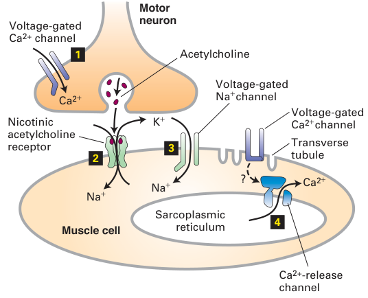
| voltage-gated Na+ channel | 电压门控Na+通道 |
| transverse tubule | 横管 |
| voltage-gated Ca2+ channel | 电压门控Ca2+通道 |
| sarcoplasmic reticulum | 肌质网 |
| Ca2+-release channel | Ca2+释放通道 |
| nicotinic acetylcholine receptor | 烟碱型乙酰胆碱受体 |
| acetylcholine | 乙酰胆碱 |
| motor neuron | 运动神经元 |
| muscle cell | 肌细胞 |
在未刺激运动神经元的情况下，对与胆碱能运动神经元形成突触处的肌膜膜电位进行仔细监测，已证明存在自发的、间歇的、随机的约2 ms、约0.5–1.0 mV的去极化。每一次这样的去极化都是由神经元中单个突触小泡自发释放乙酰胆碱引起的。事实上，正是这类自发小幅去极化的证明，引出了乙酰胆碱量子式释放的概念（后来推广到其他神经递质），并由此提出了突触处囊泡胞吐的假说。一个含乙酰胆碱的突触小泡释放，会导致突触后膜上约3000个离子通道开放，这远不足以达到诱导动作电位所需的阈去极化水平。显然，运动神经元刺激肌肉收缩需要众多突触小泡几乎同时释放乙酰胆碱。
烟碱型乙酰胆碱受体的全部五个亚基都参与构成离子通道
在许多神经-肌肉突触处发现的兴奋性烟碱型乙酰胆碱受体，是首个被纯化、克隆并在分子水平上表征的配体门控离子通道，为其他神经递质门控离子通道提供了范例。来自骨骼肌的乙酰胆碱受体是一个五聚体蛋白，亚基组成为α2βγδ。这四种不同的亚基类型彼此具有相当高的序列同源性；任意两个亚基平均约有35–40%的残基相似，提示它们都源自一个共同的祖先基因。完整的受体具有五重对称性，而实际的阳离子通道是由五个亚基各自提供的同源片段围成的锥形中央孔（图22-30）。当受体协同结合两个乙酰胆碱分子到位于αδ和αγ亚基界面处的位点时，通道开放，如图22-30a所示。一旦乙酰胆碱与受体结合，通道在几微秒内即开放。测量受体对不同小阳离子通透性的研究表明，开放状态的离子通道最窄处直径约为0.65–0.80 nm，与电子显微照片的估计值一致。这足以让Na+和K+离子连同其结合水分子壳层通过。
我们已经把神经肌肉接头作为神经递质及其受体如何工作的绝佳例子加以讨论。与乙酰胆碱一样，谷氨酸——脊椎动物脑中的主要神经递质——使用两种主要类型的受体。一类称为离子型谷氨酸受体，是配体门控通道，响应谷氨酸结合而允许K+、Na+有时还有Ca2+通过，其工作原理与AChR相同。谷氨酸还结合第二类受体，即与G蛋白偶联的受体。在本章后面我们将看到，这类G蛋白偶联受体（GPCR）和离子通道如何充当激活各种感觉神经细胞的气味分子和呈味物质的受体。要涵盖脑中发挥作用的所有神经递质受体、离子通道和其他信号蛋白，所需的篇幅将远超本书！
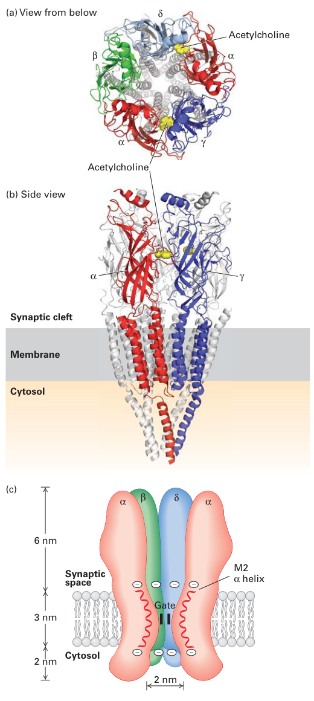
| view from below | 从下方观察 |
| side view | 侧视图 |
| acetylcholine | 乙酰胆碱 |
| synaptic cleft | 突触间隙 |
| synaptic space | 突触空间 |
| cytosol | 胞质 |
| membrane | 膜 |
| M2 α helix | M2 α螺旋 |
| gate | 闸门 |
神经细胞整合多种输入，以全或无的方式决定是否产生动作电位
在神经肌肉接头处，突触前运动神经元中几乎每一次动作电位都会触发突触后肌细胞产生一个动作电位，并沿肌纤维传播。神经元之间的突触（尤其是脑内的突触）情况要复杂得多，因为突触后神经元通常接收来自许多突触前神经元的信号。突触前神经元释放的神经递质可与突触后神经元上的兴奋性受体结合，从而开放一个允许Na+离子或同时允许Na+和K+离子通过的通道。刚才讨论的乙酰胆碱受体和谷氨酸受体就是兴奋性受体的例子，这类离子通道的开放导致突触后质膜去极化，促进动作电位的产生。相反，神经递质与突触后细胞上抑制性受体的结合会导致K+或Cl−通道开放，引起额外的K+离子从胞质外流或Cl−离子内流。无论哪种情况，离子流动都倾向于使质膜超极化，从而抑制突触后细胞中动作电位的产生。
单个神经元可以同时受到多个兴奋性和抑制性突触所接收信号的影响。神经元持续整合这些信号，并决定是否产生动作电位。在此过程中，突触处产生的各种小幅去极化和超极化沿质膜从树突移动到胞体，再到轴丘，在那里被加和在一起。只要轴丘处的膜去极化到某一电压（不同神经元可以不同），就会产生动作电位，该电压称为阈电位（图22-31）。因此动作电位以全或无的方式产生：去极化达到阈值总会引发动作电位，而任何未达到阈电位的去极化则绝不会诱发它。
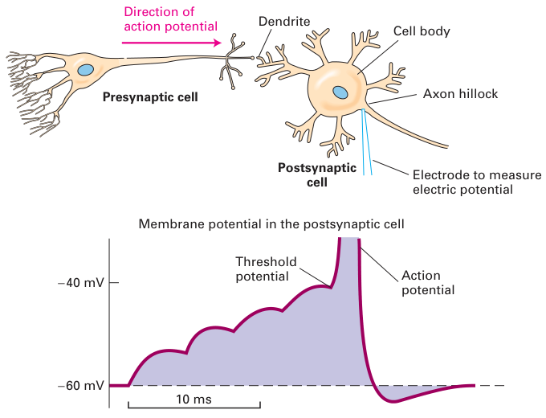
| direction of action potential | 动作电位方向 |
| axon hillock | 轴丘 |
| dendrite | 树突 |
| cell body | 胞体 |
| presynaptic cell | 突触前细胞 |
| postsynaptic cell | 突触后细胞 |
| electrode to measure electric potential | 测量电位的电极 |
| membrane potential in the postsynaptic cell | 突触后细胞的膜电位 |
| threshold potential | 阈电位 |
| action potential | 动作电位 |
神经元是否在轴丘产生动作电位，取决于它所接收的各种输入在时间、幅度和定位上的平衡；这种信号运算对每种神经元都不同。从某种意义上说，每个神经元都是一台微小的模数转换计算机，它对其膜上所有受体激活和电扰动取平均（模拟），并决定是否（数字）触发动作电位并沿轴突传导。对任何一个特定神经元来说，动作电位的幅度总是相同的。正如我们已指出的，特定神经元产生动作电位的频率，是其向其他细胞发送信号能力的重要参数。
缝隙连接允许神经元之间以及胶质细胞之间的直接通讯
利用神经递质的化学突触能以相当高的速度进行单向通讯。然而，有时信号以电的方式在细胞间传递，无需化学突触的介入。电突触依赖于把两个细胞连接在一起的缝隙连接通道（第20章）。缝隙连接的作用是使相连细胞的活动完全协调。电突触通常是双向的；任一神经元都能兴奋对方。例如，电突触在新皮层和丘脑中很常见。电突触的关键特征是其速度。信号跨越化学突触需要约0.5–5 ms，而跨越电突触的传递几乎是瞬时的，在几分之一毫秒量级，因为细胞之间的胞质是连续的。此外，突触前细胞（发送信号的那个）不必达到能在突触后细胞中引起动作电位的阈值。相反，任何电流都会继续流入下一个细胞，并引起与电流成正比的去极化。
缝隙连接既在神经元之间形成，也在胶质细胞之间形成。脑中的星形胶质细胞通过缝隙连接彼此相连，由此产生以1 μm/秒的速度在脑内星形胶质细胞网络中传播的Ca2+波。缝隙连接也在单个施万细胞内部形成，在由单个施万细胞形成的髓鞘各层之间建立连接。这些缝隙连接被认为促进代谢物和离子在髓鞘层之间的通行。
一个电突触可能含有数千个缝隙通道，每个由两个半通道组成，分别位于两个相对的细胞中。神经元中的缝隙连接通道结构与常规缝隙连接相似（见图20-20）。每个半通道由六份连接蛋白（connexin）组装而成。由于哺乳动物约有20个连接蛋白基因，通道结构和功能的多样性可以来自不同的蛋白组分。这个通道本身宽1.6–2.0 nm，允许大小至约1000 Da的分子扩散，容纳离子更是毫无问题。
- 突触是突触前细胞与突触后细胞之间的连接点，也是神经元之间通讯的场所（见图22-3）。
- 突触形成由突触前轴突区室与突触后树突区室之间的相互作用介导。细胞黏附分子使细胞保持对齐。在神经肌肉接头处，运动神经元诱导乙酰胆碱受体在突触后肌质膜上靠近正在形成的轴突末梢处聚集（见图22-23）。
- 在突触前细胞中，低分子量神经递质（如乙酰胆碱、多巴胺、肾上腺素）由H+偶联反向转运蛋白从胞质输入突触小泡。V型质子泵维持小泡内低pH，驱动神经递质逆浓度梯度输入。
- 神经递质（见图22-25）储存在突触前细胞轴突末梢的数百至数千个突触小泡中（见图22-23）。当动作电位到达时，电压敏感性Ca2+通道开放，钙使突触小泡与质膜融合，把神经递质分子释放到突触中（见图22-26第4步）。
- 神经递质扩散穿过突触，与突触后细胞（可以是神经元或肌细胞）上的受体结合。这类化学突触是单向的（见图22-3）。
- 突触小泡利用胞吐的标准细胞机器与质膜融合，包括SNARE和SM蛋白。synaptotagmin蛋白是钙感受器，检测由动作电位刺激引起、导致融合的钙升高（见图22-28）。RIM和RIM-BP把电压门控Ca2+通道拴系到释放机器上，确保动作电位与神经递质释放之间的快速偶联。
- 神经递质从突触前细胞释放后，囊泡通过内吞重新形成并被再循环（见图22-26第6步）。
- dynamin是一种内吞蛋白，对新突触小泡的形成至关重要，特别是对内吞囊泡的"缢断"。
- 运动神经元与横纹肌细胞突触处四种门控离子通道的协同运作，导致乙酰胆碱从轴突末梢释放、肌膜去极化、产生动作电位，以及随后的肌肉收缩（见图22-29）。
- 烟碱型乙酰胆碱受体是一种配体门控阳离子通道，含有五个亚基，每个亚基都有一个构成通道内衬的跨膜α螺旋（M2）（见图22-30）。
- 神经递质受体分为两类：配体门控离子通道，开放时允许离子通过；以及G蛋白偶联受体，它们与独立的离子通道相连。
- 只有当轴丘处的质膜被多个神经元受体激活所引起的小幅去极化和超极化的总和去极化到阈电位时，突触后神经元才会产生动作电位（见图22-31）。
- 电突触是神经元之间以及胶质细胞之间的直接缝隙连接。与利用神经递质的化学突触不同，电突触的信号传递极快，且通常是双向的。
22.4 感知环境：触觉、痛觉、味觉与嗅觉
我们的身体不断接收来自环境的信号——光、声音、气味、味道、机械刺激、热与冷，而我们对此类信号的感知由大脑介导。近年来，人们在理解感官如何记录外界印象以及大脑如何处理这些信息方面取得了巨大进展。例如，在第15章中我们分析了人视网膜两类光感受器之一的视杆细胞的功能，了解了它们如何充当视觉刺激的主要接收者。视杆细胞由月光之类的弱光刺激，可响应很宽的波长范围，而另一类光感受器——视锥细胞——则介导色觉。这些光感受器与一层又一层中间神经元形成突触，后者由不同组合的光感受器细胞支配。这些信号由大脑中称为视觉皮层的部分加工和解释，神经冲动在那里被转译成我们周围世界的图像。
在本节中，我们讨论支撑我们另外几种感觉——触觉与痛觉、味觉和嗅觉——的细胞与分子机制以及特化的神经细胞。我们将看到两大类受体——离子通道和G蛋白偶联受体——如何在这些感知过程中发挥作用。与视觉一样，多个中间神经元将这些感觉细胞与大脑连接起来，被传递的信号在那里被转化为对环境的知觉。总的来说，我们仍未完全理解这些神经子系统是如何连接的，尽管光遗传学这项新技术已开始为绘制这些回路打开局面。就嗅觉而言，每个感觉神经元只表达一种气味分子受体，我们将看到表达同一种受体的多个感觉神经元如何激活同一个脑中枢。因此，气味分子结合与大脑知觉之间的联系是直接的，而且理解得相当清楚。
机械感受器是门控阳离子通道
我们的皮肤，尤其是手指的皮肤，高度特化以收集感觉信息。事实上，我们全身的各种组织中都嵌有许多机械感受器。这些感受器时常让我们察觉到触觉、四肢或头部的位置与运动（本体感觉）、疼痛以及温度，尽管我们常常会有一段时间忽略这些输入。哺乳动物使用不同的受体细胞组合来报告触觉、温度和疼痛。这些机械感觉受体位于一类称为背根神经节细胞的双极感觉神经元的末梢。背根神经节细胞的胞体位于紧邻脊髓的背根神经节中，这些神经元伸出一根轴突，轴突分叉为一个支配皮肤并含有机械感觉受体的外周分支，以及一个投射到脊髓或脑干以传递感觉信号供加工的中枢分支。
许多机械感觉受体是Na+或Na+/Ca2+通道，它们响应特定刺激而被门控（即开放）；这类受体的激活引起Na+或Na+与Ca2+两种离子的内流，导致膜去极化。例子包括由细胞膜拉伸激活的牵张感受器和触觉感受器；它们已在从脊椎动物的肌肉和上皮细胞到酵母、植物乃至细菌的多种细胞中得到鉴定。
编码触觉感受器的基因的克隆始于对秀丽隐杆线虫中对轻柔触碰身体不敏感的突变株的分离。分离到突变的基因中有三个——MEC-4、MEC-6和MEC-10——编码触觉感受器细胞中一个Na+通道的三个亚基。对这些基因突变线虫的研究表明，这些通道是转导轻柔身体触碰所必需的；生物物理学研究表明，这些通道很可能是直接响应机械刺激而开放的（图22-32）。触觉敏感的复合物还含有若干对触觉敏感性必不可少的其他蛋白，包括胞质中新型15根原纤维微管的亚基以及细胞外基质中的特定蛋白，但它们究竟如何影响通道功能目前尚不清楚。细菌和低等真核生物中也存在类似的通道；这些通道通过响应膜拉伸而开放，可能在渗透调节和维持细胞体积恒定中发挥作用。
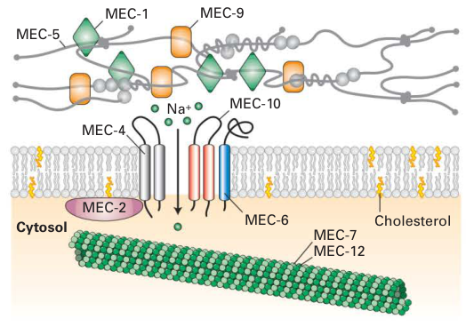
| Cytosol | 胞质 |
| Cholesterol | 胆固醇 |
| MEC-1 | MEC-1 |
| MEC-2 | MEC-2 |
| MEC-4 | MEC-4 |
| MEC-5 | MEC-5 |
| MEC-6 | MEC-6 |
| MEC-7 | MEC-7 |
| MEC-9 | MEC-9 |
| MEC-10 | MEC-10 |
| MEC-12 | MEC-12 |
痛觉受体也是门控阳离子通道
从蜗牛到人类这样差异巨大的动物都能感知有害事件（这一过程称为痛觉）；称为痛觉感受器的痛觉受体对机械变化、热和某些有毒化学物质作出反应。疼痛的作用是提醒我们注意诸如组织损伤这类能够造成伤害的事件，并引发促进组织愈合的行为。组织损伤引起的持续性疼痛很常见，许多人深受慢性疼痛之苦。因此，理解急性疼痛和慢性疼痛是一个重要的研究目标，开发治疗疼痛的新型药物同样如此。
最早被克隆和鉴定的哺乳动物痛觉受体之一是TRPV1，它是一种Na+/Ca2+通道，存在于外周神经系统的许多感觉疼痛神经元中，可被多种外源性和内源性物理与化学刺激激活。TRPV1最著名的激活剂是高于43 °C的热、酸性pH和辣椒素——使辣椒显得发烫的分子。TRPV1受体的激活会导致疼痛的灼烧感。制药公司已开发出众多TRPV1拮抗剂，作为可能的止痛药物。然而，限制这些药物用途的一个主要副作用是它们会导致体温升高；这提示TRPV1的一项"正常"功能是感知和调节体温，而这些药物抑制了这一功能。
在一项近期的里程碑式研究中，科学家利用单颗粒冷冻电镜（cryoEM，见第3章）获得了大鼠TRPV1通道在关闭构象以及两种开放构象下的高分辨率（0.34 nm）模型，其中一种结合辣椒素，另一种结合两种强效TRPV1激活剂，一种来自植物，另一种来自蜘蛛毒液。如图22-33所示，这些研究揭示TRPV1通道的结构与电压门控离子通道相似（见图22-13），由四个对称的亚基组成，每个亚基含有六个跨膜螺旋（S1–S6）。然而，在电压门控离子通道中充当电压感受器的S1–S4中带电荷的氨基酸，在TRPV1中被芳香族残基取代。这稳定了通道核心，使得TRPV的S1–S4螺旋在去极化时不像电压感受器那样移动，而是为孔内由配体结合触发的运动提供锚定点。在孔区鉴定出两个缩窄处，即门。蜘蛛毒素结合在通道的细胞外表面、靠近孔螺旋处，将通道的细胞外端锁定在开放状态。辣椒素和植物毒素则结合在膜深处、靠近孔道胞质端的一个位点，结合使孔的直径增大。这些发现表明TRPV通道经历双重门控。
2010年发现了两个通道，它们能将机械刺激直接转换为脊椎动物细胞中的阳离子电导，分别称为Piezo1和Piezo2（源自希腊词piesi，意为"压力"）。二者都形成大的阳离子选择性通道，由四个相同的亚基组成，每个亚基含有30多个跨膜结构域，由此形成的通道分子量约为120万道尔顿，并且含有120至160个跨膜片段！Piezo1或Piezo2的表达可在这些细胞中诱导机械敏感性阳离子电流。这可以通过在细胞培养物中表达这些通道，并用钙成像监测细胞对用细玻璃微管戳刺所诱导的拉伸的响应来检测（图22-34）。降低小鼠背根神经节感觉神经元中Piezo2的表达会降低其机械敏感性，而敲除单个Piezo同源基因在黑腹果蝇中则导致对有害机械刺激行为反应严重减弱的果蝇。这些实验共同表明，Piezo通道介导机械信号转导。
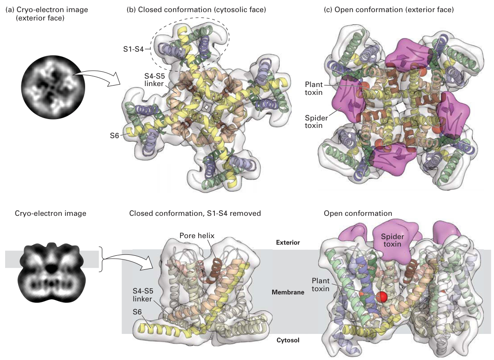
| Exterior | 外侧 |
| Membrane | 膜 |
| Cytosol | 胞质 |
| Pore helix | 孔螺旋 |
| S1-S4 | S1–S4 |
| S4-S5 linker | S4–S5连接段 |
| S5-P-S6 | S5-P-S6 |
| S6 | S6 |
| Spider toxin | 蜘蛛毒素 |
| Plant toxin | 植物毒素 |
| (a) Cryo-electron image (exterior face) | (a) 冷冻电镜图像（外侧面） |
| (b) Closed conformation (cytosolic face) | (b) 关闭构象（胞质侧） |
| (c) Open conformation (exterior face) | (c) 开放构象（外侧） |
| Closed conformation, S1-S4 removed | 关闭构象，去除S1–S4 |
| Open conformation | 开放构象 |
五种基本味觉由每个味蕾中的细胞亚群感知
我们能尝出许多化学物质，它们全都是漂浮在唾液中的亲水性、非挥发性分子。舌头的所有区域都能感知所有的味觉，而具有选择性的细胞则优先对某些味觉作出反应。与其他感觉一样，味觉的进化很可能提高了动物的生存机会。许多有毒物质尝起来是苦的或酸的，而营养丰富的食物被分解成尝起来甜（如糖）、咸或鲜味（如谷氨酸钠和其他氨基酸的肉味或鲜味）的分子。动物（包括人类）永远无法确切知道进入嘴里的是什么；味觉使动物能够迅速做出决定——吃掉它，还是把它吐掉。味觉对神经系统的要求低于嗅觉，因为需要监测的分子种类更少。令人印象深刻的是味觉的灵敏度；苦味分子在低至10−12 M的浓度下即可被检测到。
舌头的所有部位都有感知咸、甜、酸、鲜和苦味的受体。这些受体分为两种不同的类型：感知咸味和酸味的是通道蛋白，感知甜味、鲜味和苦味的是七次跨膜结构域蛋白（G蛋白偶联受体）。检测脂肪酸的特异性膜受体存在于味蕾细胞上，脂肪味可能会被认定为第六种基本味觉品质。
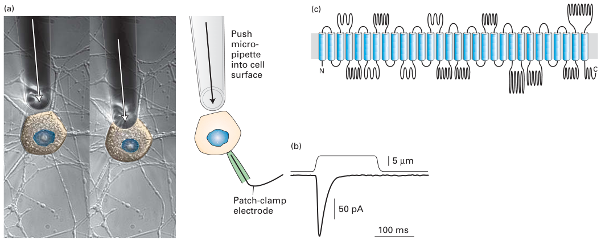
| Patch-clamp electrode | 膜片钳电极 |
| Push micropipette into cell surface | 将微管推入细胞表面 |
味蕾位于舌头上称为乳突的隆起中；每个味蕾都有一个孔，液体通过该孔将溶质带入内部。每个味蕾约有50–100个味觉细胞（图22-35a、b），它们是上皮细胞，但具有神经元的部分功能。味觉细胞顶端微绒毛上承载着味觉受体，直接接触口腔中的外部环境，因而会经历食物来源分子的剧烈波动以及潜在有害化合物的存在。舌头和口腔其他部位的细胞经受大量磨损，味蕾细胞由下方上皮中的细胞分裂不断更新。（大鼠味蕾细胞的寿命为10天。）
味觉信号的接收引起细胞去极化，进而触发动作电位；动作电位又引起Ca2+通过电压依赖性Ca2+通道的内流以及神经递质的释放（图22-35c–e）。味觉细胞不生长轴突；相反，它们通过短距离向相邻神经元发出信号。这些神经元通过多重连接将关于味觉的信息传递到皮层中专门负责味觉、称为脑岛的区域。为了确定脑岛如何知道被激活的是咸味受体还是甜味受体，科学家在小鼠接受特定呈味物质后对其脑岛进行了双光子成像（第4章）。他们用钙指示剂检测被激活的神经元，从而以钙依赖的荧光增强形式监测大量神经元的激活。这些实验揭示，四种味觉——甜、苦、鲜和咸——在脑岛内由彼此分开、互不重叠的区域表征，从而证明大脑中存在一幅介导我们味觉表征的味觉拓扑图。
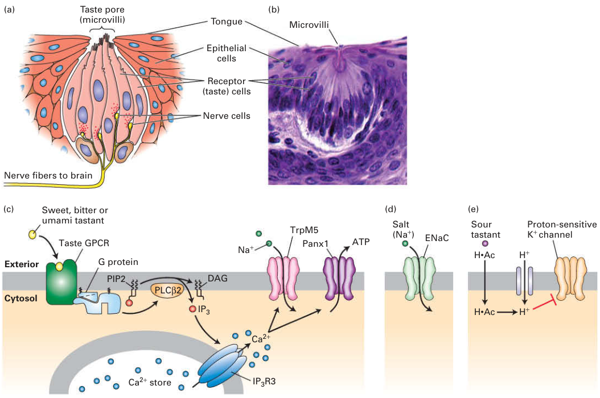
| Exterior | 外侧 |
| Cytosol | 胞质 |
| Taste GPCR | 味觉GPCR |
| Sweet, bitter or umami tastant | 甜味、苦味或鲜味呈味物质 |
| Sour tastant | 酸味呈味物质 |
| Salt (Na+) | 盐（Na+） |
| ENaC | 上皮钠通道（ENaC） |
| TRPM5 | TRPM5 |
| Panx1 | Panx1 |
| PLCβ2 | PLCβ2 |
| IP3 | IP3 |
| IP3R3 | IP3R3 |
| PIP2 | PIP2 |
| DAG | DAG |
| Ca2+ store | Ca2+库 |
| ATP | ATP |
| G protein | G蛋白 |
| Proton-sensitive K+ channel | 质子敏感性K+通道 |
| Taste pore (microvilli) | 味孔（微绒毛） |
| Epithelial cells | 上皮细胞 |
| Receptor (taste) cells | 受体（味觉）细胞 |
| Nerve fibers to brain | 通向大脑的神经纤维 |
| Tongue | 舌 |
苦味 苦味呈味物质多种多样，由称为T2Rs的约25–30种不同的G蛋白偶联受体（GPCR）家族检测。如图22-35c所示，所有这些GPCR都激活一种特定的Gα亚型，称为味转导素（gustducin），它仅表达于味觉细胞中。然而，是异源三聚体G蛋白释放的、普遍存在的Gβγ亚基结合并激活磷脂酶Cβ的一种特定亚型，后者进而生成IP3。IP3触发Ca2+从内质网释放（见图15-34）。Ca2+继而结合并开放一个Ca2+门控的Na+通道TRPM5，它是离子通道TRP家族的一员，导致Na+内流和膜去极化。升高的Ca2+与膜去极化的共同作用打开了称为Panx1的膜通道的大孔，导致ATP以及可能的其他信号分子释放到细胞外空间。随后认为ATP刺激最终将味觉信息传递到大脑的神经细胞。
不同的苦味分子在结构上差异很大，这可能是需要T2Rs这个多样化家族的原因。有些T2R只结合2–4种苦味化合物，而另一些则结合更多种类的苦味化合物。T2R家族中第一个被鉴定的成员来自人类遗传学研究，该研究显示第5号染色体上有一个重要的苦味检测基因。T2R蛋白T2R5中有五个氨基酸改变的小鼠无法检测环己酰亚胺（一种蛋白质合成抑制剂；见表4-1）的苦味。同一种味觉细胞中常常表达多种T2R类型，约15%的味觉细胞表达T2Rs。一项引人注目的基因调控互换实验证明了T2R蛋白的作用。小鼠被改造为在通常检测吸引小鼠的甜味呈味物质的细胞中表达一种苦味受体——一种T2R蛋白。这些小鼠对苦味产生了强烈的偏好，显然是因为这些细胞虽然检测到的是苦味呈味物质，却仍在发出"去吃这个"的信号。该实验表明，味觉细胞的特异性由细胞自身决定，而它们发出的信号则依据该类细胞建立的神经连接被解读。这意味着，表达T2R的甜味受体被连接到脑岛中接收"甜味"信号的区域，因而被表征为甜味。
甜味与鲜味 甜味和鲜味呈味物质由称为T1Rs的GPCR家族检测，T1Rs与T2Rs相关，也通过磷酸肌醇信号通路转导信号。三种哺乳动物T1R彼此之间只在少数几个氨基酸上不同。T1Rs具有非常大的细胞外结构域，构成该蛋白的味觉结合结构域。在感知味觉的谷氨酸受体中，细胞外结构域围绕谷氨酸闭合，这种方式被描述为类似于捕蝇草。与大多以单体形式发挥作用的GPCR不同，T1Rs形成同源二聚体和异源二聚体，这被认为增加了可作为信号的分子库。然而，对不同分子的响应密码仍在研究中。缺乏T1R2或T1R3的小鼠无法检测糖；据认为真正的受体是二者的异源二聚体。T1R3似乎是甜味和鲜味的受体，这是因为它与T1R2结合时检测甜味，与T1R1结合时检测鲜味。因此，味觉细胞表达T1R1或T1R2，但不会同时表达两者，否则它们会向大脑发送含混的信息。
有趣的是，甜味受体也存在于肠道某些内分泌细胞的表面；这些细胞也表达味转导素和其他几种味觉转导蛋白。肠道中葡萄糖的存在使这些细胞分泌激素胰高血糖素样肽-1（GLP-1），后者进而调节食欲，并增强胰岛素分泌和肠道运动。因此，肠道的某些细胞通过舌味觉细胞所使用的同一套机制"品尝"葡萄糖。
咸味 盐的味道由很大范围的Na+浓度引起，从10 mM到500 mM。盐由称为ENaC通道的Na+通道家族的一个成员感知（图22-35d）。事实上，敲除味蕾中一个关键的ENaC亚基会损害小鼠的咸味检测。Na+通过该通道的内流使味觉细胞去极化，导致神经递质释放。ENaC通道作为盐感受器的作用在进化上非常古老；ENaC蛋白在昆虫中表达时也能检测盐。在黑腹果蝇中，味觉感受器分布在包括腿在内的多个部位，因此当果蝇踩到美味的东西时，喙会伸出以进一步探查。
酸味 对酸味的感知源于对H+离子的检测。许多酸味呈味物质是弱有机酸（如醋中的乙酸），它们以质子化形式扩散穿过质膜。随后它们解离为一个阴离子和一个质子，使胞质酸化。像HCl这样的强酸由酸感知细胞顶膜上的质子通道检测，该通道使质子能够到达胞质。无论胞内H+浓度以何种方式升高，质子都被认为会阻断哺乳动物中一个尚未鉴定的质子敏感性K+通道，从而使膜去极化（图22-35e）。与盐检测一样，电压门控Ca2+通道随后会开放，升高胞质Ca2+，从而触发充满神经递质的突触小泡的胞吐。
众多受体检测气味
对空气中挥发性化学物质的感知，与对光、声音、触觉或味觉的感知有着不同的要求。光只由四种视紫红质分子感知，它们对不同波长调谐。声音通过毛发对不同波长调谐的机械效应被检测。触觉和痛觉需要少数几种不同的门控离子通道。味觉测量的是少数几种溶于水的物质。与所有这些其他感觉不同，嗅觉系统能够区分数百种在空气中运动的挥发性分子。区分大量化学物质有助于寻找食物或配偶、感知信息素，以及避开捕食者、毒素和火灾。嗅觉受体以极高的灵敏度工作。例如，雄性蛾能够检测雌性释放、飘散在空气中的信号的单分子。为了应对如此多的信号，嗅觉系统使用一个庞大的嗅觉受体蛋白家族。人类约有700个嗅觉受体基因，其中约一半有功能（其余是无功能的假基因），这在估计的20,000个人类基因中占相当大的比例。小鼠更高效，有1200多个嗅觉受体基因，其中约800个有功能。这意味着小鼠基因组的3%由嗅觉受体基因组成。黑腹果蝇约有60个嗅觉受体基因。在本节中，我们将考察嗅觉受体基因是如何被使用的，以及大脑如何识别所感知到的是哪种气味——这是对我们化学世界进行解释的最初阶段。气味分子被称为odorant。它们具有多样的化学结构，因此嗅觉受体面临与抗体和激素受体相同的一些挑战——需要结合并区分许多相对较小分子的变体。
嗅觉受体是七次跨膜结构域蛋白（图22-36）。在哺乳动物中，嗅觉受体由鼻上皮细胞产生。这些细胞称为嗅觉受体神经元（ORN），将化学信号转导为动作电位。每个ORN伸出一根树突到达上皮的腔面，从那里伸出不动的纤毛以结合从空气中吸入的气味分子（图22-37a）。这些嗅觉感觉纤毛富含气味分子受体和介导初始转导事件的信号转导蛋白。在黑腹果蝇中，ORN具有相似的结构，位于触角中（图22-37b）。
在哺乳动物和黑腹果蝇中，ORN的轴突都投射到神经系统的下一个更高层级，在哺乳动物中该层级位于大脑的嗅球。ORN轴突与哺乳动物中僧帽细胞的树突形成突触（在昆虫中称为投射神经元）；这些突触发生在称为嗅小球的突触结构簇中。僧帽细胞连接到大脑中更高的嗅觉中枢（图22-38）。
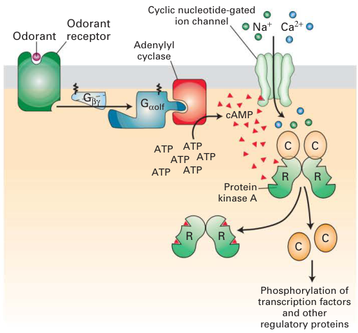
| Gαolf | Gαolf |
| Gβγ | Gβγ |
| Adenylyl cyclase | 腺苷酸环化酶 |
| Odorant receptor | 气味分子受体 |
| Odorant | 气味分子 |
| Cyclic nucleotide-gated ion channel | 环核苷酸门控离子通道 |
| Protein kinase A | 蛋白激酶A |
| cAMP | cAMP |
| ATP | ATP |
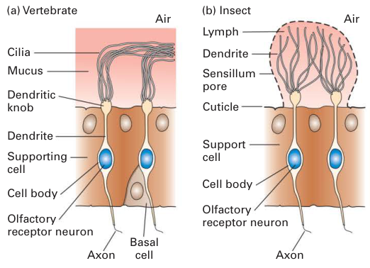
| (a) Vertebrate | (a) 脊椎动物 |
| (b) Insect | (b) 昆虫 |
| Cilia | 纤毛 |
| Air | 空气 |
| Mucus | 黏液 |
| Lymph | 淋巴 |
| Cuticle | 角质层 |
| Dendritic knob | 树突球 |
| Dendrite | 树突 |
| Cell body | 胞体 |
| Supporting cell | 支持细胞 |
| Basal cell | 基细胞 |
| Sensillum pore | 感器孔 |
| Olfactory receptor neuron | 嗅觉受体神经元 |
| Axon | 轴突 |
人类检测某些气味的能力差异显著。有些人无法检测类固醇雄烯酮——一种源自睾酮、存在于人汗液中的化合物。有些人将该气味描述为愉悦的麝香气息，而另一些人则把它比作脏袜子的气味。这些差异都被归因于编码唯一一种雄烯酮GPCR的基因中的失活错义突变。携带两个野生型等位基因拷贝的个体认为雄烯酮令人不快，而携带一个或无功能等位基因的个体则认为雄烯酮不那么令人不快，或者根本无法检测到。 ■
尽管嗅觉受体数量庞大，它们全都通过激活同一种三聚体G蛋白：Gαolf ∙ Gβγ 产生相同的胞内信号（见图22-36）。Gαolf主要表达于嗅觉神经元。与Gαs一样，配体结合后形成的活性Gαolf ∙ GTP激活腺苷酸环化酶，导致环腺苷酸（cAMP）的产生（见图15-25）。cAMP激活两条下游信号通路。它结合到环核苷酸门控（CNG）Na+/Ca2+通道胞质面的一个位点，使通道开放，导致Na+和Ca2+内流以及细胞膜的局部去极化。这种气味分子诱导的嗅觉树突去极化扩散至整个神经元膜，导致轴丘中电压门控Na+通道的开放和动作电位的产生。cAMP分子还激活蛋白激酶A（PKA），后者磷酸化并由此调节转录因子和其他胞内蛋白。
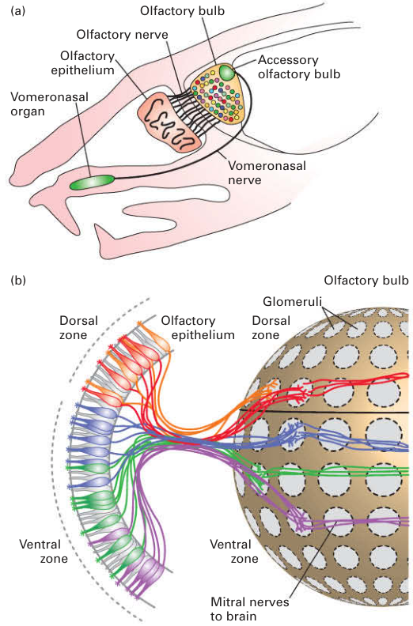
| Olfactory bulb | 嗅球 |
| Accessory olfactory bulb | 副嗅球 |
| Olfactory nerve | 嗅神经 |
| Olfactory epithelium | 嗅上皮 |
| Vomeronasal organ | 犁鼻器 |
| Vomeronasal nerve | 犁鼻神经 |
| Glomeruli | 嗅小球 |
| Mitral nerves to brain | 通向大脑的僧帽神经 |
| Dorsal zone | 背侧区 |
| Ventral zone | 腹侧区 |
每个嗅觉受体神经元表达单一类型的气味分子受体
理解嗅觉系统特异性的关键在于，在哺乳动物和昆虫中，每个ORN都只产生仅一种类型的气味分子受体。来自该细胞的任何电信号都会向大脑传达一个简单的信息："一种气味分子正在与我的受体结合"。受体对气味分子并不总是完全单特异性的。有些受体能结合不止一种分子，但被检测到的分子通常在结构上密切相关。反过来，有些气味分子能与多种受体结合。
小鼠中约有500万个ORN，因此平均而言，约800个嗅觉受体基因中的每一个在约6000个细胞中有活性。约有2000个嗅小球（每个气味分子受体基因大约对应2个），因此平均每个嗅小球上汇聚着来自数千个ORN的轴突（见图22-38）。从那里，每个嗅小球约25根僧帽细胞轴突，即总共50,000个僧帽神经元，连接到更高的脑中枢。因此，最初的气味分子感知信息不经加工就被直接传送到大脑的更高部位，简单地报告检测到了什么气味分子。
一神经元一受体的规则也适用于黑腹果蝇。已在幼虫中进行了详细研究，幼虫简单的嗅觉系统只有21个ORN，使用约10–20个嗅觉受体基因。看来每个ORN中表达一种独特的受体，并将其投射发送到一个嗅小球。ORN可以从其轴突末梢发出兴奋性或抑制性信号，这大概是为了区分吸引性气味与排斥性气味。与哺乳动物相似，ORN的轴突终止于嗅小球，在果蝇中嗅小球位于幼虫脑的触角叶。黑腹果蝇中的研究始于检验哪些气味分子与哪些受体结合（图22-39a）。有些气味分子由单一受体检测，有些由几种受体检测，因此这种组合模式使得可区分的气味分子远多于不同嗅觉受体的数量。神经元总数少使得可以构建一幅显示每个嗅小球检测哪些气味分子的图谱（图22-39b）。一个引人注目的发现是，位置彼此靠近的嗅小球响应化学结构相关的气味分子，例如直链脂肪族化合物或芳香族化合物。这种排列可能反映了新受体的进化与大脑嗅觉部分细分过程相伴发生。
让每个细胞只制造一种受体类型这一简单系统，也有一些不容小觑的难题需要克服：(1) 每个受体都必须能够以足以满足生物体需求的特异性，区分一种气味分子或一组分子。一个被过于频繁刺激的受体将毫无用处。(2) 每个细胞必须表达一种、且仅一种受体基因产物。所有其他受体基因都必须被关闭。与此同时，鼻上皮中所有细胞的共同努力必须能够产生足够多种不同的受体，以使动物具备足够的感觉多样性。如果数百个受体基因中的大多数从不表达，拥有这些基因几乎没有用处，但要在每个细胞中开启一个且仅一个基因，同时在全部细胞群体中表达所有受体基因，是一个调控上的挑战。(3) 嗅觉系统的神经元接线必须使区分气味分子成为可能，以便大脑能够确定存在哪些气味分子。否则，动物可能在本应尽快逃跑的时候却感到安逸放松。
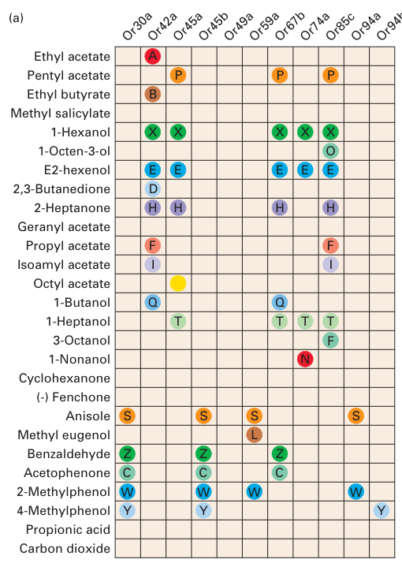
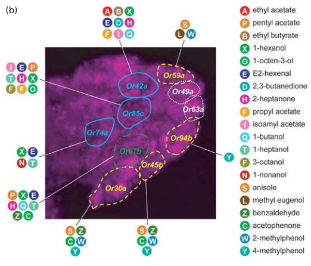
| Ethyl acetate | 乙酸乙酯 |
| Pentyl acetate | 乙酸戊酯 |
| Ethyl butyrate | 丁酸乙酯 |
| Methyl salicylate | 水杨酸甲酯 |
| 1-Hexanol | 1-己醇 |
| 1-Octen-3-ol | 1-辛烯-3-醇 |
| E2-hexenol | E2-己烯醇 |
| 2,3-Butanedione | 2,3-丁二酮 |
| 2-Heptanone | 2-庚酮 |
| Geranyl acetate | 乙酸香叶酯 |
| Propyl acetate | 乙酸丙酯 |
| Isoamyl acetate | 乙酸异戊酯 |
| Octyl acetate | 乙酸辛酯 |
| 1-Butanol | 1-丁醇 |
| 1-Heptanol | 1-庚醇 |
| 3-Octanol | 3-辛醇 |
| 1-Nonanol | 1-壬醇 |
| Cyclohexanone | 环己酮 |
| (-) Fenchone | (-)-葑酮 |
| Anisole | 苯甲醚 |
| Methyl eugenol | 甲基丁香酚 |
| Benzaldehyde | 苯甲醛 |
| Acetophenone | 苯乙酮 |
| 2-Methylphenol | 2-甲基苯酚 |
| 4-Methylphenol | 4-甲基苯酚 |
| Propionic acid | 丙酸 |
| Carbon dioxide | 二氧化碳 |
| Or30a | Or30a |
| Or42a | Or42a |
| Or45a | Or45a |
| Or45b | Or45b |
| Or49a | Or49a |
| Or59a | Or59a |
| Or67b | Or67b |
| Or74a | Or74a |
| Or85c | Or85c |
| Or94a | Or94a |
| Or94b | Or94b |
第一个问题的解决之道是嗅觉受体蛋白具有极大的变异性，无论是在物种内还是在物种间。第二个问题——每个细胞表达单一嗅觉受体基因——的解决之道已被证明涉及一种非凡的表观遗传沉默形式，它确保每个ORN中数千个嗅觉受体等位基因保持失活。这些研究表明，受体的选择依赖于从所有嗅觉受体基因均被沉默的发育状态中，对单个嗅觉受体基因的选择性激活。激活由一种组蛋白去甲基化酶和一种特定的腺苷酸环化酶触发，二者都是解除单个嗅觉受体基因座抑制所必需的。活性基因与非活性基因在细胞核内空间上彼此分隔，非活性基因埋藏在异染色质灶中，而活性基因位于常染色质结构域（见第8章）。
第三个问题——系统如何接线，使大脑能够理解检测到的是哪种气味——已得到部分解答。首先，表达同一受体的ORN将轴突发送到同一个嗅小球。因此，所有对同一气味分子作出反应的细胞都将突起发送到同一目的地。在小鼠中，关于嗅觉系统模式化的一个关键线索来自这样的发现：嗅觉受体在ORN中起两种作用：结合气味分子，以及在发育过程中引导轴突。表达同一受体的多个ORN轴突被引导到同一个嗅小球目的地。每个嗅觉受体都有一个独特的、不依赖气味分子的激活水平，可开启腺苷酸环化酶，而cAMP水平的变化则开启标准轴突引导分子的CREB依赖性表达，这些分子的分级活性被用来指定靶向到特定嗅小球。
- 机械感受器和痛觉受体是门控的Na+或Na+/Ca2+通道。它们存在于感觉神经元末端的特化末梢上，将传入信息传递到脊髓和脑干。
- 触觉敏感性需要若干细胞骨架蛋白和细胞外基质蛋白以及一个门控Na+通道（图22-32）。
- Piezo1和2是大的通道蛋白，能将机械刺激直接转换为阳离子电导（图22-34）。
- TRPV通道是痛觉感受器，可被包括热和辣椒素在内的多种刺激激活。其分子结构与电压门控离子通道的结构相似，最近已通过单颗粒冷冻电镜解析（图22-33）。
- 五种基本味觉由每个味蕾中的细胞亚群感知。咸味和酸味由特定的离子通道蛋白检测，而G蛋白偶联受体检测甜味、鲜味和苦味。
- 在所有情况下，呈味物质都导致膜去极化和诸如ATP之类小分子的分泌，这些小分子刺激相邻的神经元。某些呈味物质GPCR以不同的同源和异源二聚体组合存在，以检测不同的味觉（见图22-35）。
- 味觉在皮层中称为脑岛的部分以拓扑图形式表征。特定类型味觉（如甜或咸）对味觉受体的激活，会激活脑岛中特定且互不重叠区域的神经元。
- 气味分子受体是七次跨膜的G蛋白偶联受体，由一整套非常庞大的基因编码。任何一个嗅觉受体神经元都只表达一个且仅一个嗅觉受体基因，因此该细胞向大脑发出的信号能明确传达所感知化学物质的性质。
- 表达同一受体基因的ORN将轴突发送到同一个嗅小球，投射神经（哺乳动物中为僧帽神经元）将气味分子特异性信息从嗅小球传送到大脑（见图22-37、22-38和22-39）。
22.5 记忆的形成与储存
大脑最显著的特征之一是它形成和储存记忆的能力。数十年的研究已经揭示，记忆是以神经元之间形成的连接的强度和数量的变化形式储存的。
虽然神经系统的整体结构由基因硬性设定，但神经回路会响应各种刺激而发生广泛的塑造和重新布线。这种依赖经验的突触连接变化过程称为突触可塑性。突触可塑性通过根据经验改变脑内布线，提供了一种将先天与后天整合起来以决定我们身份的生物学手段。
记忆通过改变神经元之间突触的数量或强度而形成
突触可塑性的概念有着悠久的历史，始于19世纪末20世纪初Santiago Ramón y Cajal的神经解剖学研究。他使用一种称为高尔基染色的方法来显影人类和其他动物大脑中的单个神经元（图22-40a）。高尔基染色由意大利科学家Camillo Golgi开发，Ramón y Cajal因他们在神经系统结构方面的工作而与他共同获得了1906年诺贝尔生理学或医学奖。高尔基认为大脑由一个"网状网络"构成，即一个由相互连接的神经细胞组成的大型合胞体；而Ramón y Cajal认识到，大脑由一个个独立的神经元组成，这些神经元在接触位点相互作用——即我们现在所知的突触。Ramón y Cajal将突触检测为树突上的小突起。这些突起是兴奋性突触的突触后部分，不仅可以用高尔基染色显影，也可以用基于GFP等荧光蛋白基因表达的更现代的方法显影（图22-40b）。基于他的组织学数据，Ramón y Cajal推测，记忆是通过改变神经元树的结构以及改变神经元之间形成的突触的结构和数量而储存在大脑中的。用诗意的语言，Ramón y Cajal推测："大脑皮层就像一座长满无数树木的花园，那些锥体细胞在智能栽培下能够增加其分枝的数量……并结出越来越丰富多彩的花朵和果实。"数十年的研究在很大程度上证实了Ramón y Cajal的预测，不过现在认为记忆主要以突触（"花朵和果实"）的变化形式储存，而不是以树突和轴突（"分枝"）的变化形式储存。对海兔（Aplysia californica）缩鳃反射的研究为记忆储存的结构基础提供了经典证明（图22-41）。Aplysia californica是研究记忆细胞生物学的有用模式生物，因为它的神经系统相对简单，神经元非常大且可辨认，这意味着可以从一只动物到另一只动物辨认出同一个神经元。这些特征使诺贝尔奖得主Eric Kandel及其同事能够描绘该动物特定行为背后的神经回路，进而确定该回路中神经元之间的突触连接在记忆形成过程中发生了怎样的变化。他们聚焦于一种简单的反射行为——虹吸管缩鳃反射，即触碰动物的虹吸管（一种水流经的管状解剖结构）会导致其呼吸器官——鳃——发生防御性回缩。从虹吸管发出、与通向鳃的运动神经元形成突触的感觉神经元介导这一反射。触碰虹吸管会触发感觉神经元放电，进而触发运动神经元产生动作电位，运动神经元又与鳃肌肉形成突触并使其收缩。该反射可被经验双向修饰。反复触碰虹吸管会导致缩鳃反射幅度降低，称为习惯化。相反，给予诸如尾部电击之类的伤害性刺激会导致缩鳃反射幅度增大，称为敏感化。敏感化可以被视为一种恐惧学习形式。习惯化和敏感化可以是短暂的，也可以是持久的，取决于刺激的强度和持续时间。持久的习惯化和敏感化被发现涉及急剧的减少和增加，分别对应感觉神经元与运动神经元之间形成的连接数量。就这样，正如Ramón y Cajal所预测的，动物的经验改变了其神经系统的布线，从而编码了记忆并改变了动物的行为。
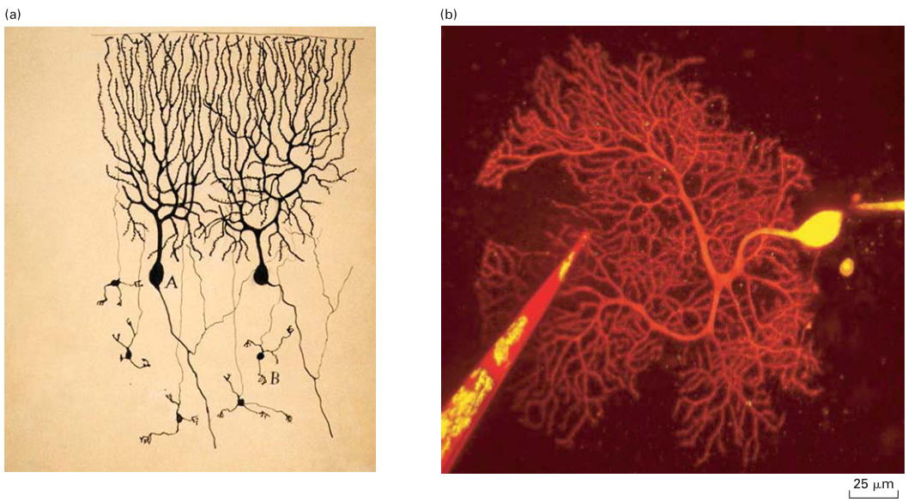
海马是记忆形成所必需的
对海兔以及其他模式生物（包括黑腹果蝇和小鼠）的研究，已开始揭示依赖经验的突触可塑性背后的许多分子机制。对人类开展的临床研究以及对动物开展的实验研究都表明，海马是长期记忆形成所必需的。海马存在损伤的人类和动物能够形成短期记忆并保持旧有记忆，但不再能够形成新的长期记忆。海马不仅对长期记忆的形成至关重要，其解剖结构还使它特别适合对突触连接进行电生理研究。如图22-42所示，海马由三条依次排列的通路（穿通通路、苔状纤维通路和Schaffer侧支通路）组成，每条通路都具有各自独立的胞体层以及轴突和树突投射。高频刺激这些通路中每条通路的突触前神经元轴突，会产生对突触后神经元连接的持久增强，称为长时程增强（LTP）；而低频刺激则产生持久的连接减弱，称为长时程抑制（LTD）。
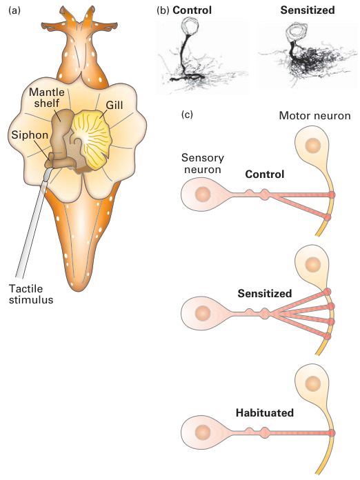
| Control | 对照 |
| Sensitized | 敏感化 |
| Habituated | 习惯化 |
| Siphon | 虹吸管 |
| Mantle shelf | 外套膜架 |
| Gill | 鳃 |
| Sensory neuron | 感觉神经元 |
| Motor neuron | 运动神经元 |
| Tactile stimulus | 触觉刺激 |
尽管大量研究已显示LTP、LTD与记忆之间存在相关性，但2013年的光遗传学研究成功证明了突触可塑性在产生记忆中的因果作用。为此，研究者在小鼠海马神经元中表达通道视紫红质，并用光刺激这些神经元以诱导LTP。LTP的诱导使小鼠获得了一种虚假记忆，其中它们对某个环境表现出恐惧，尽管它们从未在该环境中遇到过令人恐惧的刺激！
多种分子机制促成突触可塑性
在考虑经验如何改变突触强度时，思考化学突触的结构以及第22.3节所述的突触传递过程是有用的。可塑性的持久变化已被证明涉及突触前神经递质释放的变化、跨突触黏附以及突触后对神经递质的反应。我们将简要涉及突触前和跨突触机制，然后稍加详细地探讨研究得更为深入的突触后机制。
刺激海马神经元的经验会触发细胞内钙升高，进而激活激酶，使synapsin磷酸化——synapsin是将突触小泡组织成突触前部分内离散池的分子。synapsin的这种磷酸化增加了可用于释放的突触小泡数量，从而增加了给定刺激下释放的神经递质量。经验还激活使RIM磷酸化的激酶，RIM是将电压门控Ca2+通道系连到释放机器的分子，这种磷酸化是海马突触LTP所必需的。
跨突触分子的经验依赖性变化也能影响可塑性。海马学习任务已被证明会增加突触处神经细胞黏附分子（NCAM）上多聚唾液酸基团的添加。NCAM多聚唾液酸化程度的增加会降低其同亲性黏附，这被认为对于新的突触重塑和生长是必要的。
突触可塑性还取决于突触后部分激酶的激活。Ca2+通过突触后膜上的电压门控Ca2+通道和特定的谷氨酸受体内流，激活一种特别重要的激酶，即钙-钙调蛋白依赖性激酶IIα（CamKIIα，钙-钙调蛋白信号传导的讨论见第15章）。这种激酶具有一种特殊性质：一旦被激活，它就能持续保持激活状态，即使在缺乏刺激的情况下也是如此。这是因为一旦被激活，CamKIIα就会自身磷酸化，从而使其组成性激活约30分钟，在此期间该激酶会磷酸化突触后部分中的许多底物，包括谷氨酸受体。如下文所述，谷氨酸受体的磷酸化调节其电导和定位。缺乏CamKIIα的小鼠在海马LTP和记忆形成两方面都存在缺陷。
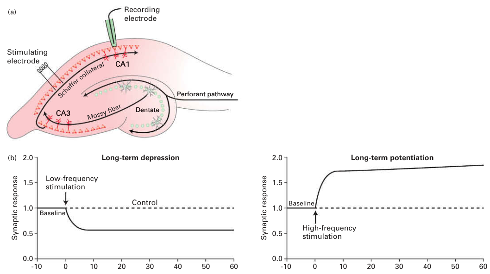
| Perforant pathway | 穿通通路 |
| Dentate | 齿状回 |
| Mossy fiber | 苔状纤维 |
| Schaffer collateral | Schaffer侧支 |
| CA3 | CA3 |
| CA1 | CA1 |
| Recording electrode | 记录电极 |
| Stimulating electrode | 刺激电极 |
| Low-frequency stimulation | 低频刺激 |
| High-frequency stimulation | 高频刺激 |
| Control | 对照 |
| Baseline | 基线 |
| Long-term depression | 长时程抑制 |
| Long-term potentiation | 长时程增强 |
| Synaptic response | 突触反应 |
如第15章所讨论的，细胞对外部信号的敏感性由表面受体的数量决定。与这一概念一致，突触可塑性背后表征最充分的机制之一，涉及突触后膜中谷氨酸受体数量的活动依赖性变化。这一过程在海马LTP和LTD的背景下得到了特别深入的研究（图22-43）。谷氨酸受体的主要类别之一称为AMPA受体，它们通过再循环内体组成性地往返于质膜。AMPA受体在突触外位点通过胞吐递送到膜上，随后侧向扩散进入突触后致密区——即突触后位点中面向突触间隙、因而接受突触前末梢释放的神经递质的蛋白质密集区域。AMPA受体通过内吞被移除，当受体侧向扩散到突触外位点、随后被网格蛋白介导的依赖动力蛋白（dynamin）的内吞内化时，就会发生这一过程。
虽然AMPA受体的运输在基础条件下就会发生，但它受到活动的调节，途径包括肌动蛋白和肌球蛋白动力学的变化，以及AMPA受体与支架蛋白和辅助亚基的相互作用。其中一个辅助亚基Stargazin介导AMPA受体与突触后致密区蛋白PSD95之间的相互作用。这种相互作用对AMPA受体在突触处的定位至关重要，因为与PSD95的相互作用可稳定AMPA受体在突触后致密区内的定位。活动会导致Stargazin的磷酸化，降低AMPA受体的移动性并增加其在突触处的浓度。阻断Stargazin的磷酸化或去磷酸化，会分别阻断海马LTP和LTD。Stargazin是跨膜AMPA受体调节蛋白（TARP）家族的一员。TARP与所有AMPA受体亚基结合，在大脑各处的表达存在差异，并介导AMPA受体向神经元表面和突触的递送。
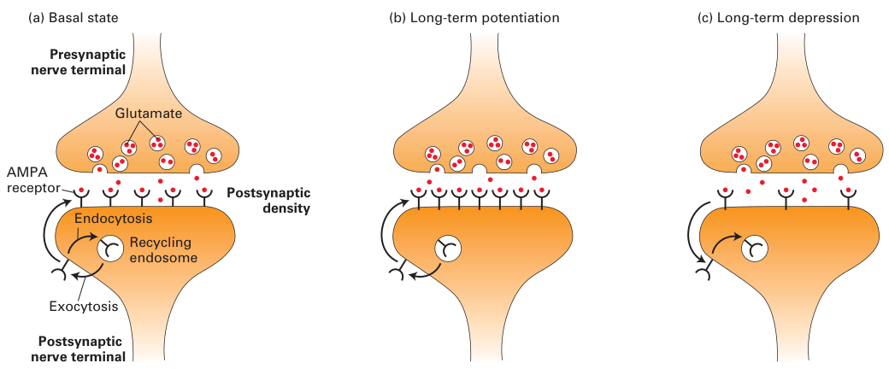
| Glutamate | 谷氨酸 |
| Exocytosis | 胞吐 |
| Endocytosis | 内吞 |
| AMPA receptor | AMPA受体 |
| Recycling endosome | 再循环内体 |
| Presynaptic nerve terminal | 突触前神经末梢 |
| Postsynaptic nerve terminal | 突触后神经末梢 |
| Postsynaptic density | 突触后致密区 |
| Basal state | 基础状态 |
| Long-term potentiation | 长时程增强 |
| Long-term depression | 长时程抑制 |
长期记忆的形成需要基因表达
上述机制对于构成短期记忆基础的短期可塑性形式尤为重要。短期可塑性和短期记忆的形成已被证明依赖于突触处原有蛋白质的修饰，而长期记忆的形成则不同，它依赖于新的基因表达。可以在第15章讨论过的胞外刺激的不同效应这一背景下理解这一点：刺激可以通过改变细胞中已有酶和蛋白质的活性产生短期变化，或通过改变细胞中基因的表达而产生长期功能变化（见图15-1）。在许多系统和物种（包括啮齿类海马）中的研究表明，LTP和LTD可以分为不需要基因表达的短暂可塑性形式和需要mRNA与蛋白质合成的持久形式（L-LTP和L-LTD）。
神经元极端的形态极性和区室化给刺激诱导的基因表达变化带来了重大挑战。首先，要开启转录，信号必须从突触传递到细胞核，而突触在许多情况下距离胞体很远。神经元通过电信号专门实现区室之间的快速信号传导；事实上，动作电位能够触发胞体中电压门控Ca2+通道的开放，以及从胞体质膜到细胞核的快速信号传导。然而，许多研究也表明，包括激酶、磷酸酶和转录调节因子在内的信号分子会被主动地从受刺激的突触运输到细胞核，以调节转录。在大多数情况下，这种长距离逆向运输已被证明涉及动力蛋白（dynein）马达蛋白沿微管的运输（如第18章所述）。信号如何在这种长距离运输过程中被忠实地维持，以便将突触刺激与基因表达偶联起来，是一个活跃的研究领域。
理解突触可塑性过程中刺激诱导的基因表达机制的第二个重大挑战，来自这样一个事实：每个神经元只有一个细胞核，却能够形成数千个突触。持久的突触可塑性形式往往是"突触特异性的"，也就是说，它们涉及单个神经元所形成的部分（而非全部）突触的强度变化。由于长期可塑性需要转录，突触特异性引出了一个问题：在如此高度区室化的细胞中，基因表达如何能够在空间上受到调控？一种重要机制涉及mRNA的定位及其响应突触刺激的局部翻译，如第10章所讨论的。的确，海马突触的L-LTP已被证明需要定位在树突和突触处的mRNA的翻译。电子显微研究表明，海马神经元树突棘基部存在多聚核糖体（即正在活跃翻译的核糖体），并进一步表明在L-LTP诱导后，具有多聚核糖体的树突棘数量大幅增加。总之，这些研究把注意力集中在突触可塑性过程中神经元转录后基因调控的重要性上，也集中在关于mRNA定位和受调控翻译的一系列问题上：哪些mRNA被定位到突触？它们是如何被定位的？它们的翻译如何受到突触活动的调控？局部翻译的蛋白质的具体功能是什么？为什么有些mRNA在神经元胞体中翻译成蛋白质后再运输到突触，而另一些则直接在突触处翻译？
转录后基因调控对神经系统正常功能的重要性由此可见一斑：一种RNA结合蛋白——脆性X智力低下蛋白（FMRP）——的突变会导致一种常见的智力低下形式，即脆性X综合征（FXS），并且也是最常见的单基因自闭症病因。导致FXS的最常见突变是FMRP基因中CGG重复序列的扩增，这会导致基因甲基化和沉默，如第6章对亨廷顿病所描述的那样。FMRP是一种翻译抑制因子，它结合靶mRNA并阻止其翻译。一部分FMRP定位于树突棘基部，据认为它在那里使mRNA保持休眠状态，直到突触刺激触发其翻译。缺乏FMRP的转基因小鼠是这种人类疾病的极好模型。这些小鼠表现出学习缺陷，反映了FXS患者的智力障碍。小鼠和人类的突触棘结构都存在异常，它们变得细长，像未成熟的棘，而不是像成熟棘那样粗短。对小鼠的研究揭示了突触处mRNA的基础翻译过度，并进一步显示了海马LTD中依赖蛋白质合成的形式的改变。总之，这些发现表明，突触对定位mRNA的翻译对于神经回路的形成和经验依赖性可塑性至关重要，并且这一过程的改变是神经发育和认知障碍的一个原因。 ■
- 经验通过一个称为突触可塑性的过程改变大脑中神经元之间连接的数量和强度。突触可塑性为记忆的形成和储存提供了生物学基础。
- 对海洋软体动物Aplysia californica缩鳃反射的习惯化和敏感化研究表明，学习会产生突触连接的变化。习惯化涉及引起缩鳃反射的感觉神经元与运动神经元之间连接的减少，而敏感化则涉及感觉-运动连接的增加（图22-41）。
- 海马是大脑中持久记忆形成所必需的一个区域（图22-42）。海马突触经历活动依赖性的突触增强形式（称为长时程增强，LTP）和活动依赖性的突触减弱形式（称为长时程抑制，LTD）。
- 突触强度的变化可以由突触前、跨突触或突触后机制介导。
- 活动在突触后部分产生组成性激活形式的CamKIIα，它磷酸化突触后致密区中的底物，包括谷氨酸受体。缺乏CamKIIα的小鼠在海马LTP和记忆方面存在缺陷。
- 活动调节突触后膜中AMPA谷氨酸受体的运输。LTP伴随着AMPA受体插入突触后致密区的增加，而LTD则伴随着突触后致密区中AMPA受体浓度的降低（图22-43）。
- 短期突触可塑性形式涉及突触处原有蛋白质的变化，而长期形式则需要新的mRNA和蛋白质合成。
- 突触特异性的可塑性形式涉及突触定位mRNA的局部翻译。
- 脆性X综合征由编码RNA结合蛋白FMRP的基因发生无效突变引起。FMRP调节突触处的局部翻译。缺乏FMRP的小鼠具有异常突触，并表现出学习障碍和海马LTD缺陷。
访问LaunchPad可获取学习工具并进一步了解本章内容：展望未来、分析数据、扩展参考文献，以及包括视频、动画和测验在内的附加学习工具。
关键术语
复习题
- 1.胶质细胞在脑和神经系统其他部分中起什么作用？
- 2.神经元的静息电位在细胞内相对于细胞外约为−70 mV。在动物细胞中，静息电位是如何维持的？
- 3.说出动作电位的三个时相。分别描述每个时相背后的分子基础和所涉及的离子。为什么产生动作电位所涉及的Na+通道被称为电压门控通道？
- 4.解释钾离子通道的晶体结构如何提示电压感受结构域与蛋白质其他部分相互作用以开启和关闭离子通道的方式。这种结构-功能关系如何适用于其他电压门控离子通道？
- 5.解释为什么动作电位的强度在沿轴突传播时不会减弱。
- 6.解释为什么在动作电位过程中膜电位不会持续升高，而是先出现平台期然后下降。
- 7.说动作电位是"全或无"是什么意思？
- 8.是什么阻止神经信号"反向"向胞体传播？
- 9.如果细胞在不应期受到刺激，为什么它无法再引发一个动作电位？
- 10.髓鞘化提高了动作电位沿轴突传播的速度。什么是髓鞘化？髓鞘化使电压门控Na+通道和Na+/K+泵聚集在轴突上的郎飞结处。预测把郎飞结之间的间距增大10倍对动作电位传播的影响。
- 11.描述可卡因等成瘾药物的作用机制。
- 12.乙酰胆碱是突触处释放的一种常见神经递质。预测神经-肌肉突触处乙酰胆碱酯酶活性降低对肌肉激活的影响。
- 13.描述肌肉收缩过程中的离子动力学。
- 14.在受刺激的细胞中，动作电位到达后突触小泡迅速与突触前膜融合。这一过程在不到1 ms内完成。是什么机制使这一过程能以如此快的速度发生？
- 15.神经元，尤其是脑中的神经元，接受多个兴奋性和抑制性信号。神经元上接受这些信号的突起叫什么？神经元如何整合这些信号以决定是否产生动作电位？
- 16.解释当动作电位经抑制性突触传递时，它被阻止传播到突触后细胞的机制。
- 17.动力蛋白（dynamin）在突触小泡再循环中起什么作用？有什么证据支持这一点？
- 18.比较和对比电突触与化学突触。
- 19.比较咸味和酸味受体分子、甜味/苦味/鲜味味觉受体分子以及气味受体分子的结构和功能。
- 20.描述记忆形成背后的一种突触机制。
参考文献
神经元与胶质细胞：神经系统的构建单元
http://braininitiative.nih.gov/index.htm
Allen, N. J., 2014. Astrocyte regulation of synaptic behavior. Annu. Rev. Dev. Cell Biol.30:439–463.
Khakh, B., and M. Sofroniew. 2015. Diversity of astrocyte functions and phenotypes in neural circuits. Nat. Neurosci. 18:942–952.
Kriegstein, A., and A. Alvarez-Buylla. 2009. The glial nature of embryonic and adult neural stem cells. Annu. Rev. Neurosci. 32:149–184.
Paridaen, J. T. M. L., and W. B. Huttner. 2014. Neurogenesis during development of the vertebrate central nervous system. EMBO Rep 15:351–364.
电压门控离子通道与动作电位的传播
Catterall, W. A. 2014. Structure and function of voltage-gated sodium channels at atomic resolution. Exp. Physiol. 99:35–51.
Hille, B. 2001. Ion Channels of Excitable Membranes, 3d ed. Sinauer Associates.
Jouhaux, E., and R. Mackinnon. 2005. Principles of selective ion transport in channels and pumps. Science310:1461–1465.
Long, S. B., X. Tao, E. Campbell, and R. MacKinnon. 2007. Atomic structure of a voltage-dependent K+ channel in a lipid membrane-like environment. Nature450:376–382.
Neher, E., and B. Sakmann. 1992. The patch clamp technique. Sci. Am.266:28–35.
Steinberg, E. E., D. J. Christoffel, K. Deisseroth, and R. C. Malenka. 2015. Illuminating circuitry relevant to psychiatric disorders with optogenetics. Curr. Opin. Neurobiol. 30:9–16.
突触通讯
Burden, S. J. 2011. Snapshot: neuromuscular junction. Cell 144:826–826 e1.
Shen, K., and P. Scheiffele. 2010. Genetics and cell biology of building specific synaptic connectivity. Ann. Rev. Neurosci. 33:473–507.
Siksou, L., A. Triller, and S. Marty. 2011. Ultrastructural organi- zation of presynaptic terminals. Curr. Opin. Neurosci.21:261–268.
Sudhof, T. C. 2013. Neurotransmitter release: the last millisec- ond in the life of a synaptic vesicle. Neuron 80:675–680.
Tang, L., et al. 2014. Structural basis for Ca2+ selectivity of a voltage-gated calcium channel. Nature 505:56–62.
Unwin, N. 2005. Refined structure of the nicotinic acetylcholine receptor at 4Å resolution. J. Mol. Biol. 346:967–989.
感知环境：触觉、痛觉、味觉与嗅觉
Buck, L., and R. Axel. 1991. A novel multigene family may encode odorant receptors: a molecular basis for odor recognition. Cell65:175–187.
DeMaria, S., and J. Ngai. 2010. The cell biology of smell. J. Cell. Biol.191:443–452.
Liao, M., E. Cao, D. Julius., and Y. Cheng. 2013. Structure of the TRPV1 ion channel determined by electron cryo-microscopy. Nature 304:107–112.
Volkers, L., Y. Mochioukhi, and B. Coste. 2015. Piezo channels: from structure to function. Eur. J. Physiol. 467:95–99.
Yamolinsky, D. A., C. S. Zuker, and N. J. P. Ryba. 2009. Common sense about taste: from mammals to insects. Cell 139:234–244.
Zimmerman, A., L. Bai, and D. D. Ginty. 2014. The gentle touch receptors of mammalian skin. Science 346:950–954.
记忆的形成与储存
Bailey, C. H., and E. R. Kandel. 2008. Synaptic remodeling, synaptic growth and the storage of long-term memory in Aplysia. Prog. Brain Res. 169:179–198.
Ho, V. M., J. A. Lee, and K. C. Martin. 2011. The cell biology of synaptic plasticity. Science 334:623–628.
Huganir, R. L., and R. A. Nicoll. 2013. AMPARs and synaptic plasticity: the last 25 years. Neuron 80:704–717.
Kandel, E. R., Y. Dudai, and M. R. Mayford. 2014. The molecular and systems biology of memory. Cell 157:163–186.
Nabavi, S., et al. 2014. Engineering a memory with LTD and LTP. Nature 511:348–352.
Ramirez, L., et al. 2013. Creating a false memory in the hippocampus. Science 341:387–391.